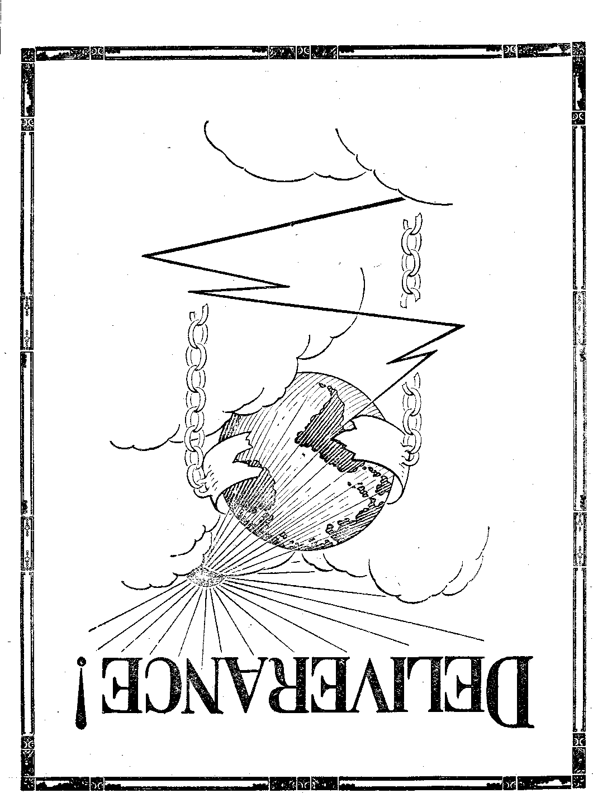

... -4;i
OLD
'WORLD DYING
Vol. VII Bi-Weeklv No. 171
April 7, 1926
INFLUENCE OF THE
MOTION PICTURE
A PEBBLE
FROM THE BROOK
PYRAMIDS BUILDING
JEWISH INVASION
OF PALESTINE
YEAR OF JUBILEE
>5'
fife
Jfe^NEV’
VORLB
BEGINNING
«*»=----■....... ........■■ r- «:
Labor and Economics Losses of Miners and Operators
Social and Educational
Hebe and thebe Throughout the World
Finance—-Commerce—Trakstoktation Twelve Thousand Unloaded Cars ......... 424
Dodge Brothers’ Voteless S«oek
Political—Domestic and Foreign
Twenty Years to Get a Law Enforced
Celebrating the Kaiser’s Birthday ............ 425
Mexico Deports Foreign Nuns and Priests ......... 426
Science and Invention Barlow’s Flying Torpedo .
Awakening the Dead ...............
How Were the Great Limestone Struct cues Built? . . . . . 433
Home and Health The Importance of the Home .
The Small Twigs on the Family Tree . .
The No-Bbeakfast Idea .........
An Adventure in the Wilds of Tonsillectomy
Travel and Miscellany Shawnee—“Burning with Unquenchable Fike”..... .
The Jewish Invasion of Palestine.......... .
Religion and Philosophy
The Theological Fake (Poem) ............. 440
The Year oj? Jubilee .........
Studies in “the Harp of God” ....
Published every other Wednesday at 18 Concord Street, Brooklyn, N. Y., U. S. A., by WOODWORTH, HUDGINGS & MARTIN
Copartners anil Proprietors Address: IS Coneord Street, Brooklyn, N. Y., TJ. S. A. CLAYTON J. WOODWORTH . . . Kditor ROBERT J. MARTIN . Business Manager WM. IL HUDGINGS . . Sec’y and Treas.
Five Cents a Copy—$1.00 a Year Make Remittances to THE GOLDEN AGE
Foreign Offices ; British ..... 34 Craven Terrace, Lancaster Gate, London W. 2 Canadian....... . 38-40 Irwin Avenuo, Toronto, Ontario
Australasian ....... 495 Collins Street, Melbourne, Australia South African ...... 6 Leila Street, Cape Town, South Africa
Entered as second-class matter at Brooklyn, N. Y., under the Act of March 3, 1879
X hiriiniTiiririiiinffiiiiiiifiitr- y.~ ? .'j~ r~ uTTi ii-~oiwt—/ -| j.r । m "iiiiininrr ~ /Mi iiinHwrjniriirwii-'.' y "i — ""ii u mriirr'iiiniTrrr:r • • t-it '
Volume VII Brooklyn, N.Y., Wednesday, April 7, 1926 Number 171
A Pebble from the Brook (Cont rib tiled')
IT IS regrettably a part of the mental makeup of the critic to point out the moral obliq-is i ties and deflections of the human family; but withal to fail to discern the true philosophy, the original causes, the history of the case, and the final remedy. The physician who visits his patient, studies the diseased parts of the delicate anatomical structure, and gives an able and accurate diagnosis, is still hopelessly handicapped if lie is unable to prescribe the necessary treatment, how to be administered, the proper diet, and the care of the patient in general.
Moreover, any person of ordinary intelligence can identify a case of measles or smallpox when he sees it, and perhaps he may describe the patient’s experience with the eloquent tongue of an Ingersoll or the prolific pen of a Wells. But for this he would deserve no special laurels as a benefactor of the patient in distress. However, the doctor may explain that the visible marks of the sickness are evidences that the dangerous stages thereof have been passed, that the patient is on the way to recovery, and that there is no cause for special excitement. The hope of all—patient, doctor, and family—-is that the disease will be destroyed, but that the patient will survive.
Calamity Howlers
THE annals of history disclose that in every generation and age since man has been upon this earth there have been well-meaning writers and prophets who have frantically sounded alarms against the people of their time, and heroically warned them of their sinful course. Of such were the three comforters of Job and their kind, the would-be reformers of the dark ages and the evangelistic manikin of defunct religions of our day.
But these should not be mistaken for the true ‘■messengers of hope” who, when warning their contemporaries of impending crises, have also shown them the possibility of escape if the flood of degeneracy and sin should be stemmed in an orderly and timely manner. The Christian’s equanimity enables him to sympathize with the people, individually'and in the aggregate. He understands that for the most part the people are victims of circumstances and conditions over which man has no control.
The critic who cruelly attempts to bare the moral and physical laxity of society without due allowance for the conditions is on the same plane as the sky-pilot who is obsessed with the spirit of pedantry, but whose crescendo voice makes melody mostly to himself, since it is heard but within the narrow walls of his own church edifice or sphere. It is the height of ineptitude and tragedy to warn people of impending judgments when they have not understood the conditions of release from responsibility. .
Exemplary Ancestry
IN EVERY generation there seems to have been an inclination to focus the light of scorn upon the people by pointing them to the virtues of our parents and ancestors as notable examples. The same is true today. We exculpate ourselves from current sins, and make panoply from the good points we do possess by th© time-worn and generation-accustomed wail, “What is the world coming to ?” A hypocrite is not one who merely betrays his profession; he is more. He is one who can deftly focus attention to the wrong-doer elsewhere, engaging the minds of the public by means of mob psychology, the meanwhile overlooking the real issues of which he may be an integral part.
But the heralded examples of our defunct ancestors, instead of proving to be inspiring towards lessons of righteousness, law enforcement and orderly living, have on the contrary often, proved to be skeletons carefully hidden away in
concealed places, whose keys were closely guarded from public possession lest we should learn some sorrowful lessons from them. On the other hand many a well-meaning parent has indulgently and exultantly pointed to juvenile propensities, and with a measure of pride hard to conceal, exclaimed, “A chip of the old block!" Is the child blameworthy if it inanely attempts a reproduction of the ideal which the parent has thus established before its mind? If the children’s teeth are set on edge is it not proof conclusive that the fathers have eaten the sour grape?
Take for instance those stormy objects of the omnipresent subject ever under discussion, “the flapper," and her male counterpart, “the cake-eater," as they are commonly and vulgarly called. It is admitted that they are lawless, disobedient, haughty, pleasure-loving, sex-perverted creatures, who for the most part demonstrate an inaccessibility to reason, emanating from good parental teaching’ and influence. They have more ingenuity than sense; more knowledge than wisdom; more energy by far than virtue. They are traveling at a shocking speed with incredible liberty and premature sophistication, noticeably perverting youthful innocence and adolescence. But is it fair to place the blame upon them to any great degree as object lessons in the survival of the unfit?
Perhaps the best lessons we could learn in this connection can be had by drawing effectively on our memories of days gone by. Our grandfathers and grandmothers could tell us of conditions almost equally voluptuous but for the opportunities of expression. According to the .standards of the Divine Judge, the seed of thought entertained is tantamount to the deed committed. He who slays with the sword commits murder; but he who with murderous proclivities hates his brother is equally guilty of the deed and cannot see life as long as he remains in that attitude. Moreover, our “grannies” could place the blame in turn upon their forefathers, back to the first man, from whose date, place and circumstances the fault begins to count. True, we are reaping the whirlwind; but why especially castigate the reapers, many of whom are innocent ?
The young man of our time is saturated with bootlegging, speedways, money, wine, women and song, aided and abetted by the chic college influence. He is cy nical, disparaging wise counsel, and crystallizes each season into a state of incarnate youth more popularly styled, “The smart set.” But is this the special object of God's wrath at this time, and the reason for His vengeance upon mankind? If so, why have we no reference to it in His Word? Neither by precept nor by example are we authorized or justified in parading the moral delinquencies of youth as an evidence of a decadence of spirit.
Disrespect for Law and Religion
OUR distinguished American forefathers of earliest history through noble and worthy legislation bequeathed to us the priceless legacy of liberty and the right to pursue happiness. But they did it in spite of themselves and not because of tender solicitude for our welfare. Talk about their being shocked at our twentieth century monstrosities! Some of the most flagrant cases of bigotry, intolerance and crime are. recorded against those fathers whose conduct is now paraded before us as inspirational and exemplary!
God forbid a recrudescence of witchcraft, the pillory, the whipping-post, stocks, the branding-iron and other persecutions, all of which are distinct marks of sin in its most conscienceless form 1 It seemed cruelly inevitable that the precious souls who first came to this country, and hazarded life itself as the price of their new-found liberty, should suffer the lash of the dark-age dragon’s tail! A few of the very tortures they suffered in Europe found their way to the new country. But not for long.
Indeed our present-day enlightenment, used or abused, deserves neither praise nor rebuke by invoking the blessing of our ancestors. It is the unerring hand of Providence that shapes our ends and prepares our destiny, and not the wrinkled, cruel hand of the well-meaning but mistaken puritan. Such comparisons are odious to the fair and impartial student of God’s plan for human ^welfare, as well as of events past and present.
Certainly crime in. this generation is ever on the increase and all good people deplore it. But which would shock the finer sensibilities the more, the morning paper whose headlines give a vivid description of the latest hold-up or murder de-luxe, the lurid conjugal troubles bared in scandal, or to witness the latest extraordinary efforts to punish criminals by means of whippings and beatings until their flesh is pulp, with holy intention of forcibly instilling good behavior? Our present-day methods of prison rule and mismanagement are but lamentable relics of mediaeval stupidity and barbarism, but a few degrees in advance of those ancient methods. But they are a trifle of improvement.
. One cannot altogether like the greased, camouflaged, precocious young folk of our day, but neither can one dislike them nor despise them. It is probable that the giddy-headed, silly, empty-brained, spineless, and fickle youth who know nothing about general decorum and care less, may have less difficulty in the incoming kingdom of Christ than the ultra-religious who have their heads crammed and cramped with respect (?) for hypocritical piety and demon-istic creeds. After all, an empty brain is to be preferred to a smoky and ill-ventilated intellect.
Talk about priceless ancestral consolation derived . from their deference and respect for things spiritual! It is to smile! Instead of a true understanding of the Scriptures they had dogma; instead of faith they had superstition; instead of a beautiful and true reverence for God they had a slavish fear of judgment both here and hereafter. This represents the situation in general. There were grand and noble exceptions, but they were greatly in the minority.
The Auto and Modern Speed
THE multitudinous devices of machinery manufactured by men who are for the most part discoverers, not inventors, created from the products of a resourceful earth and intended for sensible use by an intelligent people, obviously make clatter and din as their wheels move with increased rapidity, rasping, jarring and shocking the nervous system almost beyond the power of human endurance. These are not mixed blessings. They are more properly blessings of mixed usage. The only evil attached to these material things is that which exists in the minds and purposes of those who misuse them, the critic with the single-track mind included. “Unto the pure all things are pure.”
Luxury is the parent of ease, and readily begets vice and disease of the mind as well as of the body. But it must not be mistaken for convenience. All luxury is a convenience to selfgratification, but not all convenience is a luxury by any means. To fix the blame of a feverish and nerve-enervated society, giving itself to reckless abandonment, upon modern conveniences, intellectually and materially, is grotesque. The toll of recklessness is indeed appalling, despite the continuous appeal to the mind with the slogan, “Safety first.” Life is cheap and th® public mind is apathetic in the face of danger.
It is safe to conclude that these modern blessings have come to stay. Only the mind set in mediocrity and puerility could possibly wish to revert to the old-fashioned customs and mannerisms. Man is about to step into that glorious era of prophetic declaration when, as it is promised, he shall “subdue the earth”. It must be remembered that many of the present-day blessings and discoveries are still in their infancy, in the experimental stage. Moreover, it is as necessary to fit man for the enlightenment as it is to fit the enlightenment to man. The initial experience is costly, and the pathway fraught with insurmountable difficulties, not the least of which are the foolish caution and almost bitter opposition by well-meaning but squeamish 'folk who can see only evil in the works of highly scientific and skillful men.
Mental and mechanical ingenuity, even at the cost of enormous expenditures of monies and the lives of men, is still to be preferred above indisposition to progress. To refuse men the opportunities of scientific and material research would inevitably result in a lethargic and stagnate condition. The toll of human lives and the endangering of society’s welfare, compared with the progress made, is so small that it is negligible.
Tenantry
rpHE housing facilities of the highly congested cities are pitiably inadequate. The atmosphere, literally and morally, is impure. The standards are far from high. One's senses ache at seeing the incredible rows of houses where thousands suffer an existence with interminable shifting and moving from one apartment to another. The very walls stand as grim sentinels on duty, exacting their toll of human energy and happiness. One’s still more delicate senses are plentifully shocked at the backyard sights, sounds and odors of this unnatural state of affairs of the teeming populations, heterogeneous and cosmopolitan,
But this 'did not .ome about suddenly nor by the volition of the people. Gradually and almost imperceptibly these urban populations swelled to their present numbers; and many of them would change their conditions if they could. But the true critic should know that equally motley are the silver glare of sky-scrapers, the broadways, the fifth avenues, and the swell sections of the ultra rich, many of whom have lived by their wits at the expense of their less fortunate brothers and sisters, but who must yet pay for their ill-gotten gains. ,
And yet behind all this, the people have a heart that is capable of better things when properly taught. There is a reality that is gratifying, and the dark cloud has its silver lining of peace and good will.
Suppose we take the errors and superstitions ©f the dark ages, the brazen splendor of ancient Babylon,- the lust for power of Persia, the human wisdom of Greece, the tyranny of Rome, and add to this mixture the combined fraterni-; ties and societies of our day with their narrow; mindedness. Then add for spicing, the pride,, vanity, selfishness and insubordination of men in all ages, including the present, and place them . in a caldron. If kept there for a sufficient time this potpourri will bring to the surface a scum which to decent public opinion and common sense is highly offensive. But this undesirable : matter must not be mistaken for the true hearts of mankind who at this very time must witness just such a process, due to God’s retributive judgments upon man-made and man-worshiped systems. ’
The New Freedom
Trip ever increasing number of divorces obtained each year seems to strike terror to the hearts of our elders. Likewise is the discussion of birth-control a cause for consternation. These subjects would have been banned by a fastidious public at one time, both in conversation and in literature. It was once considered the height of indelicacy merely to think of such things, much less to talk about them even in the most private instances. Now the writers of our magazines and periodicals treat both subjects with a frankness that is often considered indecorous and indecent. But such "prudery” is of course openly challenged by the ‘'purest and the best” minds of our day. They explain that it is the secret things, that turn into magic and present an irresistible lure , and charm, and that when the sunlight of public thinking and. discussion is turned onto any subject, the false and the sham flee away. .
Why not have our young folks who contemplate marriage, calmly and soberly discuss their future affairs with utmost frankness, commensurate with the advanced knowledge on sex relations? Such intimate matters deserve as much consideration as financial projects, the prospect of furnishing a home, and their mutual welfare in general. Are not information and instruction quite warranted if thereby they can lessen the weight of the burden afterward? Why have compunctions against mentioning things before marriage whose stark realities must be faced sooner or later regardless ? .
The false tenderness, modesty and piety that characterized the pre-marr i age ’conduct of i the children of ye olden times was soon metamorphosed into a new realism, which brought in its wake shocked sensibilities, rude awakenings, heart aches, disappointments, etc. Oh, the bitterness, the irony, the fate of a life whose details must be so closely guarded against honest discussion until it is too late! As much as we rightly deplore the silly banter and the caricaturing of this subject, it has done no more harm than the foolish concealment of things pure and good within themselves. • .
The discussion of birth-control is not inelegant nor crude,, certainly not immoral. It is our honorable duty to give some reasonable and proper concern for and study to this matter. When any subject is denied discussion, criticism, and made sacrosanct, the way is paved for revolutions and disaster. A true philosopher will get at the root of the matter and thus his tree of knowledge will bring forth worthy fruit.
The inertia of a lazy, slothful womanhood which acquaints itself with knowledge along this line only for the purpose’of shirking or escaping the responsibilities of child-bearing and child-rearing of course deserves rebuke; but certainly not at the hands of prudes, nor of those who envy this life of ease, and who would do similarly but for the lack of knowledge of nature’s inexorable laws. It is an inescapable fact that there is a popular demand by all classes of people for literature along this line. All honor and thanks to the sincere person or persons who offer the information to worthy people (regardless of its abuse by unworthy ones)/in these days of rigid economy, costly foods, high rents, and close quarters.
The husbandman of the vineyard tells us that the fewer the branches, the better the fruit. The farmer tells us that the smaller the acreage, the better the attention possible. Fewer and better children might not be an elegant verbal slogan, but the principle of it is commendable.
Let it not be overlooked that the prophetic declaration is equally strong to the effect that in the age to come there will be no more children born upon this earth, no more infants of days. Rather, the time and energy will be devoted to the regeneration and rerearing of all mankind. Perhaps this agitation over birth-control is more than an indication of decline of spirit. It may be an evidence of the dawn of the new day. There may await a ruder awakening for the so-called moralists than for the so-called “eugenics”.
There are extenuating causes for divorces, and when justified there can be no honorable scruples against them. There are certain states in this country where divorces cannot be granted except for the reason given in Holy Writ. This seems good! But why should a state' which makes no effort to bring its other affairs up to the standards of Christian ethics bind its subjects to this particular rule? A man who makes no profession of religion may break every other commandment but this one. He may be a tyrant, a brute, but if he keeps the seventh commandment of Moses inviolate he is considered a model husband! The state, therefore, is often the more direct cause of wrong-doing than are its subjects ’
Two people living together under utterly contentious and impossible domestic circumstances, are committing greater offences against themselves, against society, and against God than by honorably seeking and obtaining release.
Moreover if the judgments of this day will mean a disintegration of things financial, social, ecclesiastical, why should it surprise us if there is a general shaking of things marital and conjugal? Do not the Scriptures foretell that in the resurrection they will neither marry nor be given in marriage? Perhaps the decline of marital respect and reverence is indirectly an evidence of the new day!
Of course the male of the species is the harder hit of the two. He has been proudly perverse to the invasion (?) of the sanctum of his headship and its inherent prerogatives, by the female. It has obviously made an appreciable difference in the administration of domestic affairs. But let him cheer up. There are more invasions ta follow.
The Spirit of the Times
DESPITE the selfishness rampant, the harshness, decay, debauchery, senility, the earth is beautiful and life is sweet. As we journey onward through the transition from the old to the new, our emotions are difficult to control. There is so much which is intrinsically good, but which withal demands thoughtful and intelligent reasoning in the use thereof. We glorify and beautify the things of nature, which God has placed upon this earth for its possession and habitation, almost to the extent of a worshipful regard.
With the increased knowledge we have material advantages, the use of which is bound to bring delight to the senses almost to the degree of exhilaration. All the forces of nature, animate and inanimate seem surcharged with a renewed hold upon life at this time. Just a few efforts here, a bit of chiseling and shaping there, and straightway the unsightly obstacles to our views are removed and the rough places made smooth and harmonious. The attractiveness of things mundane is the design of a benevolent Creator.
But the misuse of nature’s forces and resources, while freely admitted, may be properly likened to the scaffolding of a building, whose existence is temporary, but which for the time noticeably obstructs the exquisite architectural design, jarring and distracting the public eye. The scaffolding is, however, necessary and useful. It supports the materia] and enables the workmen to build therefrom. This lesson is true of the entire period of the reign of sin and death. Experience is positively man’s best teacher concerning the parts that are wrong; and when the scaffolding of evil is far removed then the ability and power of the Master Workman will shine forth upon mankind with an effulgence of joy hitherto undreamed of. Man, in the perfected state, will in turn be a credit and a joy unto his Maker.
Flames Five Hundred Feet High
THE recent fire in the top of the Equitable
Building, New York, is said to have been the highest big fire in the world. The fire was confined to the thirty-fifth floor, to a pipe shaft and to the roof, where the flames were five hundred feet above the pavement. Three men who fled to the roof were rescued with some difficulty. No lives were lost.
TwelvcThousand Unloaded Cars
WHEN the anthracite strike ended it found in the railroad yards around New York City twelve thousand cars of coke and soft coal, which the public suddenly decided they did not want at any price if they could get anthracite. Some of this coke 'was bought for $15 a ton at the ovens and some of the coal was brought from Illinois at a freight rate of $9.25 on each ton. New York fuel merchants have a big problem on their hands to get rid of this material.
Losses to Miners and Operators
LOSSES to miners by the anthracite coal strike are said to be about $125,000,000 in wages and to the operators about $50,000,000 in profits. As there are over 125,000 miners affected their average losses are less than $1,000 apiece. As there are about a dozen operators their losses seem to be about $4,000,000 apiece. In other words, while the average miner earns $1,000 the average operator earns four thousand times as much. This makes it appear that it is much more profitable to be an 100% profit American than to be any kind of miner at all.
Rosetta Felig and Ping Pong
Rosetta Felig lived in a New York slum, took sick, had no doctor, and af ter battling till eleven years old with foul air and poor food died and was buried in a free grave at a total expense of $38. Ping Pong was a dog of the same age, owned by a wealthy New York woman. He died the same day, and after an elaborate funeral was buried in a costly grave at a total expense of $1,500. A small part of this sum would have kept Rosetta alive. We doubt if the average 100% profit American really believes at heart that any dog is worth forty times as much as a child, even if these figures do seem to indicate that proportion.
Twenty Years to Get a Law Enforced
TN WASHINGTON, D. C., there has been in force for twenty years a law protecting the motormen from having to use trolley cars which have open fronts, i. e., which have front windshields but leave the sides exposed. Action has just been taken to compel the offending company to obey the law.
Operators Endear Themselves
SOFT coal operators endeared themselves to the public during the anthracite strike. That is to say, the coal which they had been selling at $2.41 per ton they made dear by selling at $6.60 per ton; though the men who mined it received the same wages at the high price that they did at the low.
Progress in Forty-One Years
TT HAPPENS that in the year 1885 a Housing'
Commission pointed out by name and number twenty-three tenement houses in New York City which were at that time considered a menace to the health of the city. Since that time nine of those menaces have been torn down, but the remaining fourteen are still wholly or partially occupied as human dwelling although, as a matter of fact, they are hardly fit for pigs. The Wall Street owned and managed Trinity Church corporation is considered the star landlord of buildings of this class. Righteousness of this sort pays large dividends. See Matthew 23: 2-36.
Dodge Brothers Voteless Stockholders
K FEW weeks ago it was disclosed that a New York bank had bought the Dodge Brothers automobile concern for $146,000,000. Attention is now called to the fact that the money was raised by the sale of non-voting stock, while . the bank kept the voting stock for itself. In other words, the public bought the Dodge Brothers concern with its own money and then made an outright gift of the property to the bank that will hereafter manage it. The public will . probably get some dividends but it will have absolutely nothing to say about the management of the company which its funds have purchased. ■ This is like buying a house and turning it over to a stranger who will control it and may or . may not return something in rents to the purchaser. It is high finance.
What St. Louis Adores
T710LL0WING the example set by Chicago, where many of the most prominent men of the city attended the funeral of a gunman, St. Louis has just distinguished herself by flowers costing $10,000, and a funeral cortege two miles long, in memory of the leading rum runner operating between New Orleans and that city.
Peace Hath Her Defeats
PEACE hath her victories no less than, war, but she hath her defeats too. In the year 1925 the statistics show that 87,000 men, women and children were killed in accidents on the streets, in the homes and in industrial workshops. Of this number 21,000 were killed by automobiles and 25,000 at work.
Barlow’s Flying Torpedo
Lester P. Barlow, United States bomb expert, has invented a flying torpedo, capable of a sustained flight of 1,000 miles, having room in its fuselage for 5,000- pounds of high explosive and vast quantities of concentrated poison gas, and able to destroy an entire city. The torpedo is directed by radio from the ground.
Mr. Burbank's Associates
A FEW weeks ago Mr. Luther Burbank, noted plant specialist, attracted wide attention by proclaiming himself an infidel. Two weeks later he went into more details on the subject. The dispatches report that on the last occasion the infidel sat between two ministers and that both congratulated Mr. Burbank at the end of his talk. The talk was given in a San Francisco Congregational church.
Awakening the Dead '
WITHIN the past few years several accounts have been published of people who have ’died and been awakened to life by injections of adrenalin. In Cleveland, Ohio, recently, a well-known business man, E. F. Hauserman, died while undergoing an operation for appendicitis. The attending surgeon immediately made a large incision under his heart and reached in and massaged that organ until life returned. Breathing had stopped completely, but the man is now on the road to health, minus his appendix.
Celebrating the Kaiser’s Birthday
A HUNDRED thousand people celebrated the
Kaiser’s birthday in Berlin by gathering in front of the former Imperial Palace and demanding that the ex-potentates and princes be given nothing. One of the processions carried a pole from which an effigy of the ex-Kaiser Wilhelm was hanging by a rope, with the inscription : “Cheers for the Hohenzollerns.”
Prohibition Brethren in Discord
A FEW years ago, during the time of the war, the brethren of all denominations seemed locked in one another’s arms, all espousing the same causes and sharing the same purse. Now Cardinals Hayes and O’Connell are out denouncing prohibition, the Episcopalians are badly split as to w’hich way to go, while the Methodists of three varieties and the United Brethren have joined in a manifesto declaring that prohibition has built a new prosperity, raised the standard of living, improved the diet, housed the homeless, clothed the naked, filled the schools, increased the savings and lowered the death rate, and that they can never consent, to its abandonment. They point out that the liquor traffic was a ninety-two percent beer traffic.
The Rescue of the “Antinoe” Crew
COMMENTING on the rescue of the “Antinoe” crew the Manchester Guardian said:
If we harbored a fear that the great humane traditions of the sea might have been weakened by the sneaking barbarity of the submarine and mine or by the arrogant force of giant liners, we must be relieved by the story of the rescue by the “President Roosevelt” of the crew of the sinking British ship “Antinoe”. The sea has many fine records of bravery and sacrifice, and this is worthy of a place with the noblest of them. The two ships spent together in mid-Atlantic four days of terrible strain in a pitiless sea which baffled many attempts at rescue. But in the end lifeboats from the American ship, manned by volunteers who risked their lives in the effort, took all the members of the exhausted British crew from the wreck. Two American sailors sacrificed their lives. No wonder that bonfires blazed from the hillside of Queenstown when the “President Roosevelt” drew in on Saturday night, that her captain and crew received official welcomes of honor in the Irish port and at Plymouth, and that King George and President Coolidge exchanged messages across the Atlantic! It was only what one sailor does for another, but it stirred the heart of the world.
Strides Made in South America.
ATTENTION of the world is being diverted more and more toward South America.
^Various exploring expeditions, the airplane ' flight of Ramon Franco from Spain to Buenos PAires, the British concession in Bolivia and ' many other events have led the minds of men in that direction of late.
British Desire Work When Available
HE hunger for work in Britain was demonstrated in Manchester early this year when two thousand men applied for work offered to six unskilled men. A near riot developed when it was found that the places had been filled by friends of employes of the company overnight, but after three of their number had been employed and fifty more had been listed for future vacancies the crowd dispersed.
Touching Petition of Alaskans
IN A petition, to Congress the natives of southern Alaska say:
We are a fishing people; our food from generation to generation has been the salmon, that''once swarmed in our streams. Our right to catch salmon in the many bays and rivers of Alaska was first exercised by our ancestors. Today our fishing rights are ignored, and we have been ordered out of the bays where our forefathers fished and from favorable places for fishing with the form of fishing gear to which we are accustomed, while the large cannery interests are permitted to fish unrestrictedly in the places that are favorable to the use of their mammoth fishing machines. The salmon that are not caught by these large machines are migrating to our fishing grounds, but we are forbidden to take them.
Hard Times in Poland
OLAND is having hard times. At intervals during the past winter more than half of her 600,000 miners were idle, and of those who were working a large proportion worked only part time.
Mexico Deports Foreign Nuns and Priests
I SPAT CHES from Mexico declare the intention of the Attorney General to arrest and deport all priests who are not natives; and arrests have already begun. Additionally, several convents have been closed and sealed and the French and Spanish nuns will be returned to France and Spain. All church property ia Mexico was nationalized in 1850 and since that time the church could not legally own any property in that country. For the past nine years it has been illegal for religionists of any foreign nationality to teach religion in Mexico,
A New Method of Keeping Fruit
AFTER seventeen years of experimentation, in which time 888 experiments were tried, & San Francisco wholesaler of fruit has invented a system of packing freshly picked fruit in metal containers, filled with a gas known only to himself, but said to be cheaply made. In these containers fruits and flowers have been shipped half way around the world, arriving at destination in the same condition as when they were packed. The fruit is picked shortly before it is fully ripe and is allowed fully to mature after reaching its destination. The containers are carried in temperatures not warmer than fifty degrees,
THE importance of the home cannot be overestimated. Early settlers endured great, privation and risked their lives to establish and maintain their homes. Under the cultural, refining influence of the home the men whose names we revere developed the ability and character to establish this great democracy.
The Town Meeting, at which the citizens gathered to conduct their public affairs, could not have been successful had there not been the home influence. Their decisions rested upon their abiding faith in their homes. To protect their homes they lived and died. The same spirit animated the pioneers who steadily marched westward, until the whole country became settled.
With the growth of cities and the increase in factory production a change has come. Year by year more people are living outside the influence of home life, thus losing its fireside fellowship, cultural influence and fraternal spirit. The effect of this change is clearly seen in our political, economic, social and religious life.
Believing that this lessening of home influence upon the affairs of the community, state and nation is very detrimental, and that nothing else can so well promote human welfare, I urge that a specific and determined effort be made to restore the influence of the home in public affairs.
The home stands supreme as an agency to strengthen character, mold sentiment and pro- mote human welfare. The sacred influence of the home, the fellowship of the fireside and its fraternity spirit can develop and organize a public opinion that will favorably react in public affairs, simplify national and international questions, promote world peace, and help to establish the reign of good will on earth.
. President Coolidge has well said, “Look well, then, to the hearthstone. Therein all hope of America lies.”
I suggest that citizens initiate a home movement, a fireside fraternity. I believe that the hope of humanity rests considerably upon the home and its influence. All the forces that center in the home should be used for the common good. The purpose of such a movement may be expressed in these words : To establish justice in all human relations. This means that love must be the directing influence. The golden rule must be the guide in all social, political and industrial affairs. Let our watchwords be:
Fraternity with one another. ■ Fellowship with truth. '
Service to humanity.
Beginning in the home, the creative source of life, there must go forth the new spirit of unselfish service in social, political and industrial life to establish liberty, equality and fraternity, with justice to all mankind.
TRAIN up a child in the way he should go; and when he is old, he will not depart from it.” (Proverb 22: 6) For the last six thousand years the insidious disease of sin has eaten at the heart of father Adam’s family tree. For a long time the various limbs, branches and twigs were able to maintain a certain degree of greenness and respectability; but now even the tiny twigs, the children, show to a marked degree the withering blight of sin-sickness.
Human ingenuity has planned, schemed and investigated for many years along various lines in order to better the human family, but has, alas, neglected the trouble that hinders at the very source, the youth, the child, the small twig on the family tree. *
It is only since the light of the new day has cast its searching beams upon human society, that the children and their welfare have come into consideration.
Parental love, of course, has always thrown its protecting care around its young; but to sense the real importance of rearing children who are afterwards to become the men and women of the world has been a thing lost sight of by the majority.
The mad struggle to exist has often caused the parents to look upon children as a necessary evil instead of, in any way, a blessing. So year after year, while the canker of sin has eaten deeper and deeper into the heart of the human family, more and more the children have suffered and felt its evil effect.
Until very recent years little or no. legislation was ever enacted in any country for the protection of its children. Our country has only recently witnessed a struggle in our lawmaking body, making for its end an amendment to the Constitution, for the protection (?) of oui- children. '
It seems that the adult mind has at last awakened to the importance of child care and training, but almost too late; for among the criminals of “the last evil days of the old order” we find many children, poor children, with “teeth on edge” from “'the sour grape” of sin which their forbears ate!
A number of years ago Charles Dickens sought to bring reforms into the schools and orphanages of England, and he did a wonderful work with his forceful writing. Judge Ben Lindsey and others of America have, each in his own way, endeavored to lift the moral, mental and physical standard of youth; and this shows a fine spirit, too.
However, while these steps taken by a nation or by individuals for children as a whole are all proper and right, the real place to plan for chil-Hren and their future is in their own home and at the very beginning of their young life. A child should be planned for years before it is born. This is necessary because of the canker at the heart of Adam’s family tree. Only Almighty God can cure that, and He will do so through the work of His Son during the golden age that is now dawning.
A parent should consider that each child is endowed differently by nature. Each must be handled in a different way. However, there is a general rule or principle by which all children can be managed, and that is the power or principle of love.
Love is a general expression of benevolence which embodies a number of elements—gentleness, kindness, goodness, etc. Exercised in behalf of the child, these give it confidence and courage instead of fear.
The tiny infant must learn from some one. Therefore great care should be taken as to who does the bending of the small twig and as to how it is done; for assuredly there is no greater truth than that voiced in the line, “Just as the twig is bent the tree’s inclined.”
Every act, every look, every word and tone will be observed and, more than likely, copied by the child. The things he learns gradually become habit and involuntarily the little one indulges in them to his good or to his hurt. As soon as he begins to think and reason (and that comes now at a very early age) he begins to ask questions. A wise and observant person once said, “A child shows its desire to exercise its own reasoning faculties by asking “Why?’ in its attempt to find the balance between the true and the false; and the answer ‘Because I told you so’ may silence but never satisfy.”
A normal child, free from the restraints of custom, is simple, unaffected and charmingly truthful as a rule. Generally his ideas of right and wrong are not warped till he comes in contact with the world; and his ability to judge fairly is sometimes amazing.
A trait in children that is often labeled stubbornness or wilfulness is simply decisiveness : ©r determination. These are splendid traits of character if, as a proper balance wheel for them, we cultivate in the child a love of justice. With a strong sense of justice he will never overrun the other fellow’s rights. A child of this kind, grown up, makes a strong-minded man or woman, which is adorable if he uses “the spirit of a sound mind” to mix in with this particular ingredient in the cake of character. It behooves a parent, therefore, to stand on a basis of absolute justice in relationship to the child; and it will thus learn fair play at home.
One element of love that a successful parent must have is sympathy. He must sympathize with the child in all its aims and ambitions. Early in life it will have opinions and theories of its own. Carefully and sympathetically point out any error in its reasoning or judgment, seeking continually to cultivate good traits in the child.
The parent is supposed to be rich in wisdom and experience; and the child will look up to him for counsel and advice, if invited by an attitude of understanding sympathy. Ofttimes confidence is withheld because of fear on the part of the child. As a result it may receive advice from the wrong quarter, or come to wrong conclusions in its own immature mind.
A child should never be forced into anything until the parent first explains why the step is necessary. Many people demand obedience of their children while wholly ignoring the question that arises, “sometimes to the lips, and sometimes to the eyes.” Children have minds, and can think and reason; and they have a right to know why they are called upon to do certain things. They think and feel even more keenly than their elders; for their minds are free from impressions of passions that mar the older minds.
The parent who continually uses coercion to obtain obedience from the child may gain immediate results; but usually the after results are baneful. Generally one of two things follows: The child has a broken spirit and obeys through fear; or he is bold and defiant, with a bitterness that finally hardens the young heart and teaches it the indifference voiced in the saying, “A scolding does not hurt, and a whipping does not last long.” When these children leave the parental care they usually “break out” and run wild, having been in restraint so long that something is bound to happen.
Who does not remember “Pip” and “the tickler” of Dickens’ fame? Pip’s sister and the tickler were a waking and sleeping terror to him. Her bringing up “by hand” was also administered without stint, with the result that he lied to her, stole from her, and found nothing in his hungry Httle heart for her but fear. Not so with Joe, his sister’s husband. He sought and found protection, sympathy and understanding from Joe; and this continued to the end.
Punishment as a rule should be as nearly as possible free from force. Grown-ups do not like to be treated with force, and children are miniature men and women. Even the best and most careful of parents, however, will acknowledge that there are times when it is necessary to use “the rod”. And when it is used it should be done in a thorough manner, and as a last resort for open disobedience.
To deprive a child of something it likes very much is a commendable method of punishment. Many times disobedience may be forestalled by appealing to a child’s sympathies, or expressing confidence in its goodness or honesty; and very bad children have been reached by gaining their interest in nature—birds, flowers and trees.
The moral and religious training of a child should never be left entirely to another, however capable that one may be. It is a privilege, a duty, and should be a deeply joyful experience to take the pliable, tender twigs on the family tree and bend them as you will. What parent can look wi„th lightness on so solemn a responsibility! It is an awe-inspiring and mighty task to mould the character of a little child; for that character, once formed, crystallizes either for good or for ill, and who can change it then ?
Not long ago a Cincinnati paper contained an editorial entitled “Parents”, in which this question was asked: “If a child could choose its parents would it choose you and me ? Could we qualify to its satisfaction?” If our faults and virtues were enumerated, would our faults stand out so glaringly that the child would turn from us? Are my children’s faults to be laid at my door? These are questions that every parent should ask himself or herself.
If self-complacency and egotism did not hold the adult so firmly we might be able to see where trouble with the children lies.
So in summing the matter up, we find (heredity and environment notwithstanding) that “disobedience to parents”, one of the signs of the end of the age, is brought about in most cases directly, in some indirectly, by the parents’ management or rather mismanagement of their children. Wake up, parents! We must see our responsibilities. The new day dawns! We must get into and keep in the light!
BIG BUSINESS has again become nervous over the methods now employed by labor to win its points. The “unholy trinity” holds control of the press and the ballot, but labor has measured up to the occasion by ignoring these channels- and by resorting to secret ways of strangling injunctions at birth, operating a system of “key men” in every phase of industry.
These sentinels, I am informed, instantly report to headquarters anything that is unfavorable to labor’s interests. If the matter is critical, these “keys” throw the tumblers in the locks of big business at a moment’s notice, to the extent of wrecking an industry in fourteen days.
No one but the officers of the labor organization knows who these “keys” are, but whole regiments of workers are caused to hearken to their dictates “as to a voice from heaven”. This principle has already operated, some say, in certain recent hold-ups of mail trains, the bonus men of the army giving tips to their less fortunate comrades on the outside.
In view of the above it is not hard to see that the symbolical “earthquake” which is scheduled to follow the “winds” of war, could easily be set in motion the moment the Almighty would let loose upon society the “four winds” hitherto held in leash.
No wonder the comics of Mutt and Jeff sense that there is “something rotten in Denmark”. For has not the Governor of Ohio come out into the open and declared that less than fifty percent of the tax moneys ever reach their destination, but invariably become “gravy for the boys” in oiling the machinery of distribution?
Space would fail us to enumerate the needs which cry out for the divine remedy and for vengeance upon the heads of tyrants! Surely the day of the oppressor is short; and beyond is the golden age, the happy day, bringing in emancipation and deliverance by the great Peace Prince, such as earth has never seen. No other medicine can cure this case of political and religious disorders.
The Motion Picture By F. Leon Scherrer
SPEAKING of the tremendous influence of the modern schools of life and thoughtpower, a writer in Collier's says:
Have you ever happened to consider the great developing forces of our national life? What influences are most likely to show their effect on American life and character? What are the underlying powers which are destroying the ethical life and determining America’s future ? There is the power of the school, the power of the church, the power of the government; and, more potential than either of the above is the power of the press; but today we have the power of the screen, a mighty dynamic force of which we desire to speak more particularly.
The average attendance at all the public schools in this country is a little more than 15,000,000. For every three children attending public school, two people are watching motion pictures during the school term. But the schools .£top in the summer, while the movies go on. And for every hour spent in the church, more than three hours are spent in the movies. And tills tremendous new factor upon civilization, according to the Ethical Motion Picture, is "the greatest moral force in the world, potentially powerful for either good or evil, acting daily on millions of minds, the majority of them young and impressionable, who are given over almost entirely to being entertained by that which is only a short step at best, from being an absolute affront to mature intelligence”.
In 1921 there were 17,824 theaters in the United States alone, exclusively given to the si lowing of motion pictures, Ten million people a day watch the news reels, spending as many hours each day at the movies as are spent on all the daily papers.
We are what our impressions make us. Take a child of finest instincts and inheritance, bring him up in the slums, surround him with an environment that impresses upon his developing mind evil only; and you soon have a first-class crook. We receive our most indelible impressions through the eye. It has been said:
That which goes into one ear escapes through the other ear, and is soon forgotten; but that which enters the eye cannot escape, making a lasting impression upon the mind.
Viscountess Astor says"
We have learned from psychologists that vivid impressions of things seen with the eye do not leave peo-
4S0 pie’s minds, especially children’s minds. We ought to aim therefore at demanding a very high standard in every respect from the cinema motion picture entertainments that show. distorted ideas and ideals, that misrepresent life, where the taste and moral code and conduct of the individuals are cheap and stupid, and lower by just so much the ideas and ideals, taste, character and conduct,
The Movie as an Educator
rpilEBE are 22,000 newspapers published in the United States and Canada. Their aggregate circulation, morning and evening, is 31,000,000; their Sunday circulation is 15,000,000. The influence of these newspapers is varied ia character, serving to mold the impressionable minds of the readers along the lines of education, religion and politics, science, art,, literature, world movements, and along the issues of life. But the motion picture, while not so far-reaching, nor along so many lines of thought, is perhaps a more potent factor in the ethical impressions and influences on the mind, and thus can be made a mighty power for good or evil in moulding or undermining character.
The Episcopal Churchman says:
We can make the motion picture one of the most potent powers for good that has come to the world for amusement and education. Shall the church and the school treat the movie as a menace and a risk, or as an opportunity ? We can do no other than treat it as a moral opportunity;
Says Paul Smith in the Lookout, Cincinnati, Ohio: __
There is no longer any doubt of the motion picture’s place in the academic, ethical, moral and spiritual education of humanity; it has been proven in so conclusive a maimer that colleges and universities, civic betterment organizations and churches have recognized and adopted the film as a means toward the accomplishment of their aims.
The Literary Digest, quoting from Ilie Adrian, Mich., Telegram, lias this to say :
The moving picture industry is much more than a mere industry. It is a moral, civic, artistic and social influence of the utmost importance, and urgently needs the work of high minds and strong hands.
The Charleston, S. C., News and Courier says:
The only purpose of the motion picture industry so far discernable has been a purpose to make money; hence
■ it has subordinated everything else, including art and morals, to that end. Wherefore, we are not surprised to find an anonymous writer informing us:
“I am in the business myself and usually am acquainted with the leading film that is to be shown; and about three times out of four I will not give my children permission to go nor do- I care to go myself; and yet where we live in a residential suburb, the pictures are shown one evening each week at the Parish House of the leading church. The member of the congregation who selects the films is a motion picture exhibitor of wealth and influence. He is able to comb the entire motion picture market for the best films. Where they are shown, almost the entire community turns out to see them. Looking for only one good picture a week we cannot find it.
. “And again I have done one thing that comparatively. few active motion picture men seem to find it possible to do: I have managed to keep in close touch with the .world beyond the motion picture horizon. Among my rather close friends I am fortunate enough to number newspaper editors, college professors, business men, farmers, novelists. It is this somewhat unusual background and association that has kept me in motion pictures.
“'Something always of an observer and something of an outsider, coming in contact with the disagreeable as well as with the fascinating side of film production, I have been forced to realize not only how tremendous is the influence exerted by the motion picture today, but how greatly that influence is abused. On account of their stupidity the movies today are one of the greatest dangers threatening our entire social fabric. The intelligence, the standard of taste and character, and the morality of the whole country are gradually being undermined by this unending stress of photoplays watched by millions, open-mouthed. The great power exerted by motion pictures today is a menace to the morals of the . rising generations.
“They are not going to reform, because they cannot; they do not know how! It is not intentional evil that ails them; it is ignorance. It is because of the -lack of knowledge that practically every movement for better pictures has, to date, been either an empty sham or a flat failure. Why did the movie industry go wrong? It was left to the mercy of whosoever wanted to fool with such trifles and, beyond a casual interest in its mechanical side, there was nothing about it to attract scientists or educators or publishers or bankers.
“Aside from the waste, carelessness, exorbitant prices, rentals, and salaries on. every side, easy money and sloppy methods, with inferior human material in charge, are still characteristic of the average studio. To . improve the film output, to change and better the quality of the hundreds of photoplays that are going out yearly, to determine in part what the character of the American citizen of ten or fifteen years hence is going to be, we have got to fight the still present condition of cheapness, overpayment, waste, inefficiency and excessive commercialism that permeates the entire industry.”
Yes, this is the industry that is turning out the filing that nearly ten millions of people a day go ip watch. Youth and Ignorance are sitting at the feet of Incompe-ence, Inefficiencyand Greed.
But, says Collier's editorially:
The seriousness of this rests in the fact that the men who make the movies are in effect the teachers of our children, teaching them distorted views of life and character, misrepresentations of humanity. The pity of it is that millions of impressionable young Americans should sit nightly at the feet of these little men, men of relatively low intelligence, utterly unfitted for the positions of leadership, which through force of circumstances they occupy.
We desire systems of examination to select the best teachers for the schools of the country; long courses of study are necessary. The authors of the country are subjected to a drastic process of elimination before their efforts finally find their way into print. We are unwilling to read books or hear sermons or to let our children be taught by people who do not know what they are talking about. Yet in the realm, of motion pictures we allow our children, and go ourselves, to watch photoplays produced on such a low scale of intelligence that our own untrained minds can detect their weaknesses and obvious absurdities. Instead of asking them to educate us up we are allowing them to educate us down, at a rate of millions and millions of hours of influence a day.
Through their influence on the minds of millions, day after day, motion pictures are affecting the character, little by little, of our entire citizenry. Literally they are undermining America.
Leading in Wrong Direction
AS A CASE in point I quote from GoodHou.se-keeping, from an article by Wm. B. Joyce, president of the National Surety Company of New York, captioned, “Teach Your Son to be Honest.” We read:
This is a new and changing era, not only of living, but of moral standards. With the adoption of new standards we have created for ourselves and our children a new and false “necessity”; false, but as effective an incentive and motive for dishonesty as that of the common thief who steals to satisfy his hunger.
Now it is under such conditions as these that you and I are sending out our sons today to start upon their business careers; we are putting upon them a terribly dangerous handicap. What are we going to do about it? I do not mean to say that our changed ideas of moral standards have banished all ideal of old-fashioned honesty and square dealing. There is more real honesty in the business world today than there ever was, even if for no other reason than that it has been found to pay, that to be honest is good policy. What I do mean to say is, not only is the moral education of the present generation shamefully neglected, but that the education that they do receive both inside and outside of the home points diametrically in the opposite direction.
The sensational scare heads in the daily papers, playing up the glamour and romance of criminal exploits, an equal emphasis upon the penalty which, almost without exception, criminals of all classes pay; the trend of our modern fiction ; the exploitation of criminal actions in the moving pictures, where through many reels the hero evades the law only to be reformed by a miracle of virtue in the last few minutes of the showing of the film;-all these things whether we recognize the fact or not, are a part of the education of the young generation, and exercise a profound influence upon the imagination. We are face to face with a serious problem. What is the remedy for such a situation?
The outstanding cause of the present crimewave in America is the absence of parental or home control and discipline which has characterized American life for the last quarter of a century or more, in the opinion of Arthur P. Will, referee in the Tarrens Land Court His opinion is written in reply to a request from the American Bar Association, which is taking a referendum of its members with regard to crime and measures for its control. He wrote:
The time is now ripe for the weakness and indulgence of its progenitors to exhibit their natural and inevitable result in the present generation. We have sown to the wind and now we are reaping the whirlwind. The harvest was a little postponed by the war.
I hope some course can be decided upon by means of which conditions may be ameliorated, but the complete cure will be a slow and laborious process. There must be brought home to our citizens an appreciation of the necessity of discipline and self-control, and of the fact that the chief business of life is not the pursuit of pleasure but the performance of duty—duty to one’s self, to one’s neighbor and to the state.
Wrong Impressions of America
AND as was stated by President Angell of
Yale College:
The great strain upon the character of the young man is found in the changing moral and religious standards of the time (due) particularly because of the rapidity and violence of those changes.
However, the seriousness of misusing this power to set people wrong, to give them half a truth, to educate them falsely, and the demoralizing effect of it all, is not limited to young America. To quote John Barrymore, noted English playwright, we bear “a responsibility for what we let loose upon the world”.
Writes the editor of the San Bernardino Sun:
The unusual coincidence in connection with Mr. Hays’ visit to the Movie Capital was the fact that at almost the very instant he was telling a group of people, prominent in the business and in the film world, that changes must and will come, the industry was being indicted by the Presbyterian Synod of California because of the distorted notion of America which the pictures give to people of other lands. To make the contrast more notable, Mr. Hays had emphasized the exportation of films as a bridge to a better understanding between nations.
Says the Synod’s report:
The idea the natives of Canton, Shanghai, Tokio, Calcutta, Bombay and Jerusalem get of the United States and its inhabitants is from the Western pictures; and that all the Americans who are not cowboys are crooks, dead beats and libertines.
In Jerusalem, within one hundred yards from the grave in the Garden where the Savior was laid, there is a movie run by an enemy of all righteousness, showing revolting and sensual pictures of American life.
According to the statistics available, 61% of all films produced are dramatic, 20% humorous, 5% from life, 4% history, l%fairy, 2%tricks, 3% industry, 2% scientific and 2% sport, while Biblical subjects are almost entirely ignored. Hence we need not wonder that when looking for only one good Biblical film a week, it cannot be found. According to recent contest reports Biblical subjects have now been relegated to fifth and last place in importance. The question, therefore, as to the needs of the hour answers itself.
For this reason it is important to emphasize this crying need for Biblical subjects; for when we take into consideration the tremendous influence and effects of the movies today, the traditional belief of Vox populi vox Dei is the most conclusive proof and incontrovertible evidence of perverted taste and unsound judgment.
“For,” says Mr. W. W. Hodkinson, president of the W. W. II. Corporation, as quoted in the Literary Digest, “the moving picture industry is in a critical stage where it will either take permanent form or disintegrate.”
Plays with religious motives, according to Walter Hampden, do not succeed, because they are not well enough done ;while John Barrymore, the noted English playwright, informs us: “Pictures (generally) are not better because they lack imagination!” But, says Horace Bushnell, “In time to come, both the drama and the novel will turn to religious themes.”
Speaking of the “Life of the Master” film, McClure’s tells us:
It alone will show men anew what that life has done for the world. It will help men to realize, if they have never realized it before, that the best in their lives and in the lives of the men and women whom they knew, has its origin in the teachings of the gentle Galilean; it will show them with clearer vision that no philosophy, no science, no religion has offered the world anything that will replace the teachings of that life.
And Leslie’s Weeldy adds:
Today the Man of Nazareth stands as he stood 2,000 years ago, far in advance of the world. He still remains the ideal towards which the spirit of man strives, but has never yet attained. ■
MUCH of the wonderment in respect to the Baalbec, Thebes and similar ruins found scattered in Northern Africa and even that of . the Great Pyramid is worked up by the speculations of travelers exploring the little known parts of the earth, seeking copy for articles or books for public digest.
In a recent article we have described to us enormous stones, one of which is 60 feet long, 14 feet deep, 12 feet broad, and computed to weigh 700 tons, and another stone of 900 tons; and so closely do they fit that no jointing material or bed is needed, as they are chiseled and planed so perfectly that the blade of a penknife or a piece of paper cannot be inserted between them.
The next thing is to appeal to the imagination. In the quarry where such mighty stones were hewn, by what means did the ancients work them, and chisel and plane them so absolutely true! What unknown means of hauling and transport had they, and how did they hoist them into position—an absolutely impossible task for engineers today? ..
All this is good for the imagination and good material for journalists. But let us get to facts. Truth is often so near to us and so simple that we stumble over it, not excluding some so-called scientists. We are therefore apt to accept wild statements without reason or investigation.
Let us take the Great Pyramid, for instance. . It is built on a limestone foundation. There is plenty of clay at hand, sand in abundance, and water in the Nile. Here we have on the spot all the necessary elements to make our modern concrete. Limestone and clay in correct proportion burnt and ground produce cement, and mixed in proportion of one of cement to six of sand will in bulk make a very hard concrete, or even if mixed in proportion of one to nine of sand.
Probably a small canal from the Nile conducted the water to the base of the Pyramid. After the site was prepared, wooden framework would be made in sections, fastened with clamps and folding wedges for ease in erecting and taking down. Having the correct bevel for the casing stones, this framework would be filled with concrete. Next day it would be set sufficiently to take away the framework, and workmen would be detailed as plasterers to face it up.
The second stone would not require one end of the framework as the concrete would be put against the first stone. Thus no joint would be needed, 'nor could it fail to fit exactly. This would be repeated until the base was covered with a square of cast concrete stones five feet high, then the floor would be sectioned off. Commencing in a corner only two sides of framing or shuttering would be required as the concrete would be put against the casing stones forming two sides of the section being filled in. Thus stones could be cast any size or weight, according to the size of the section.
This method explains the wonderful exactness of the joints; how could it be otherwise? The same applies to the bed joint. As the structure grew they would have a level floor to work on. Within a week the concrete would be solid enough to carry any weight required to put upon it. The granite blocks which might present a difficulty to some could be raised up as each level was completed until they were at the required height.
It is very probable that an entrance was originally left in the Pyramid at what is called Mamouris forced passage and blocked np on completion. It is very probable that a large portion of the great building was carried through this aperture to the bottom of the First Ascending Passage, which is very little higher than the outside level; and then it could have been drawn up the First Ascending Passage on small bogies, and .as the building got higher it could be carried up the Grand Gallery and the concrete deposited as required; and possibly even higher still and later on blocked up.
It is very suggestive that in the ramps in the Grand Gallery blocks of wood were imbedded in the concrete, and a platform or floor built across from the two dwarf side walls for walking on. and for the bogie trucks running underneath—< the wooden floor being slatted to give foothold.
Concrete is no new thing, nor is artificial stone; and the Great Pyramid could be built in this our day with but a mere fraction of . the physical energy required when it was erected.
Truly one is awed by its tremendous size, but what impresses us most are its measurements and what they symbolize, proving that it had a Divine Architect. Personally I would not be surprised to learn that the Children of Israel built it when in Egyptian bondage.
FADDISM is the curse of dietetic wisdom;
and the strange part of it is that a fad. once established never seems to wear out. Aside from the vitamin fad, in the favoring of foods supposedly superior in vitamin values, there is not a health fad in existence that was not in prominence more than a quarter of a century ago.
The eat-too-much and no-breakfast theory, the no-water-at-meal-time idea, the wheat-bran fad, the raw-food fad, the restricted-diet theory, the favoring of foods of quick and easy digestibility and the rest in the catagory of faddism were all bright spots in health science at the early date I began its study. Health knowledge was then in its infancy and practically bound up in faddism, and T'was compelled to run the gauntlet of such of these as were not glaringly unscientific in their appeal.
With a constitution wrecked by severe sickness in early childhood I grew up sickly with an exceptionally weak nervous system and with a stomach in a constant state of rebellion. My physical strength was so weak that at the age of twenty it was only by considerable exertion that I could lift a bushel of grain onto a horse or into a wagon. At that age I launched on a two-years experience with drug remedies, expecting wonders from their lauded merits; but was doomed to bitter disappointment.
The result was that I became convinced that health lay in diet rather than in drugs, and I became an enthusiastic student of dietetic principles. My first experience was with the restricted diet and eat-too-much theories, and the combination came near being my finish. But I finally awoke to the fact that my system needed feeding rather than starving, and since then I have never been afraid to eat when hungry. I have had abundant chance for observation along this line, and I have found that my own experience was not exceptional.
A Harmful Influence
THE eat-too-much agitation has all along done more harm than good. The reason for this is because the wrong people have been influenced by it. Health preaching is entirely lost on the gluttonous, who live to eat rather than eat to live.
A limited or a refined and consequently unbalanced diet often creates a gnawing desire for food, due to a restricted or impaired metabolism from a scarcity in supply of some of the necessary nutritive elements and the retarding influence of the resulting abnormal poisons with which the system is flooded. I have often experienced this same trouble when compelled to go on such a diet. The cure is not by fasting or further starving, but by feeding the system through a proper correction of the diet.
The no-breakfast theory is merely a phase of the eat-too-much one and rests on the same foundation principles. There are possibly some who are of sedentary habits, especially among the middle-aged and old, who can forego break* fast with benefit. But an occupation entirely sedentary is an abnormal one ; and in this, like fell ‘ abnormal circumstances of life, extreme measures must sometimes be resorted to in order to maintain even a semblance of health.
We are all bound by the iron fetters of an abnormal social order, and absolutely perfect health is impossible under it. I have yet to see the adult who did not show the unmistakable signs of death working in him. One does entirely the light and sedentary work, and another does the active muscular work, and both labor from early until late. The ideal would be three to four hours of active employment during the morning hours, and then after a rest the necessary light and sedentary work, followed by several hours of relaxation and recreation.
The theory that the body wastes are eliminated more efficiently and more speedily during a fast is a mistaken theory. Waste elimination goes on continually, and is in no way interfered with by the assimilative processes. With normal exercise and a proper diet there is no excess waste, collecting in the system requiring a daily fast to get rid of. Nothing has yet been found to take the place of a period of active exercise, while the system is fresh during the morning hours, to influence the free and rapid elimination of the body wastes. But this exercise, to be beneficial, should be taken only after a light but substantial breakfast.
The; stomach, does not require the rest that many think it does, nor is such rest good for it. With three meals a day it gets a substantial rest between each, to say nothing of the long- night rest: and during the latter half of the digestive process there is but light tax upon it.
The Morning Appetite
HUNGER is the system's call for nourishment, and it is never present except when food is needed. Hunger should normally assert itself within one to two hours after rising in the morning. If it fails to do this something is wrong, either in habit or in diet. Perhaps it may be in the character of the occupation. If traceable to this, and if occupation cannot be conveniently changed, it is much better to cut out breakfast than to eat without the proper appetite. ■
Usually a poor appetite in the morning can be traced in part at least to other causes. Too much, sleep lias a depressing effect upon the system, arid may be back of the difficulty with many. Where the work hours are not exceptionally late one should rise as early as five during the summer season and no later than six in the winter. Still earlier hours do no harm.
An improper diet for supper is a frequent cause of a poor morning appetite. Such foods as meats, beans and cooked vegetables should, not be used at this meal. With the wear and fatigue of the day, and the consequent need of rest and sleep the system is in no shape to do justice to a meal of heavy and hearty foods, and the lighter the character of the foods used the better.
A disregard of proper solvent combinations in foods at meals may give rise to excess wastes in the system with an effect that will interfere with a normal appetite. Nine-tenths of health authorities seemingly ignore this vital health knowledge, yet the theory of food solvents is the keyto a successful health diet.
Where food solvent combinations are disregarded there is also very sure to be a radical shortage of potassium assimilated. This means difficulty in waste elimination, as potassium is to the system in that respect what soap is to a' cleansing from dirt and grease.
Any health fad may interfere with a normal appetite, as all are more or less harmful in effect. Almost everyone who becomes interested in diet for health takes up some of these; for all have a philosophical appeal. One of the most common of these is the really foolish theory that water with meals or around meal times retards digestion. The fact is that water at meal . time, when not used to wash food down, has never hurt anyone except in imagination.
Where it has not been destroyed through force of habit there should normally be a thirst for water around meal times; and if it is not supplied, the assimilative processes are in a measure held up until it is. A depressing influence on the general vitality is the result. There is never a desire for water when the system does not require it.
The system cannot handle either solid or semi-solid foods to an advantage without a greater quantity of water in it than it will at other times require. The greater part of the weight of the body is of water foundation, and the liquid principle of most foods is water. So do not be afraid of its use at any time. I drink water freely before both dinner and supper and immediately after all meals, also during all meals when desired; and few have a more sensitive assimilative organism than I possess.
If the appetite is to be kept normal and a strong general vitality maintained, stomach petting must be avoided. The stomach is a muscle as well as a digestive and assimilative organ; and if its tone and powers are to be kept from degenerating, it must be given a measure of hard work to do. The midday meal should be the one for this, as the powers of the assimilative system are then at their best. The selection of foods only of quick and easy digestion for the dinner meal is a mistake.
Ileserve Vitality
WORKING after one becomes hungry is decidedly injurious, sapping constitutional vitality. The sooner one eats after hunger is fully established the better the digestion. If not convenient to eat, it is better to remain quiet where possible.
Hunger is the signal that the system is on reserve energy. This means that the blood stream is being fed directly from the vitality of the system. If we take heed to the signal, and supply the called-for nourishment no harm is done; but if we put it off, even for an hour, and in the meantime continue working, our vitality is weakened and the system’s ability to handle food when finally supplied it is lessened.
None of us is able to do just as we would under an exacting social order where life is a mere struggle for an existence, but why make our bonds and fetters the worse by adding more to them?
All health authorities are in agreement that it is necessary to practically exhaust all our resources to maintain the excuse for health that we are pleased to call “good health” under the strenuous conditions to which we are subject.
We are not going to supply the necessary nourishment to do so by any system of fasting.
But few active people, who eat to live rather than live to eat, use too much food in quantity as a whole; but the most of us use certain kinds of food to an excess and not enough of other kinds, and here is where much of our difficulty lies. The fettering rules of well-meaning health advisers would have planted my frail constitution for keeps years ago, and some of them did make a nice start at it.
Where an appetite exists for breakfast and we forego eating until noon, a weakened vitality results; and our stomachs will not handle a hearty dinner that they otherwise would. The effort should be to keep the system off from reserve vitality as much as possible. This can be done only by the feeding of the blood stream, through the nourishment taken into the system, This continues some time after the stomach aS practically empty. Food is reduced to life-giving. energy through the action upon it in its digested form by the ductless glands to which it is taken by the circulation. After this process is completed it does not take very long to exhaust the free supply by one engaged in active employment.
If engaged in very light or sedentary work and we find our health better by foregoing’ breakfast it is the thing to do, but eighteen hours every day in one stretch without food is little short of a suicidal schedule for a lot of us.
THE entire hill country covering upwards of . twenty square miles immediately adjacent to Shawnee, Ohio, southwestward, is afire and has been ever since the year 1884. The underlying coal strata throughout this expanse of hilly territory are burning with no possibility of a stoppage before the fire has burned itself out from lack of further fuelage.
All over the area there issues from the multitudinous hillsides and summits amass of smoke and steam continuous in duration. And where-ever a fresh outbreak occurs flames of fire shoot into the air to a height of nearly a hundred feet. In places the ground surface has caved in, and in some instances cattle have gone down with the falling mass and burned to a crisp.
People fear to venture on these hills lest the earth might crumble beneath them and they be precipitated into the fiery caldron. Everywhere there are holes, and at the bursting out of every added hole additional air is let in and increases the fury of the raging elements below.
The smoke is not dark grey nor black, as one might naturally suppose, but is as pure white as steam exhaust and dangerously suffocating. It emanates from thousands of crevices and cave-ins, and is of uneven distribution.
One might suppose the infernal regions of Dante's imagination were conventioned in this twenty square-mile district, and that Shawnee were not a desirable place of abode. If ever there was an outward physical manifestation of a literal hell of fire and brimstone Shawnee can justly lay claim to being at its portals, and no city would wish to deprive her of her glory.
■She has the situation indisputedly, and any night her citizens can look out over the vast territorial region and meditate the question, Is there a fireproof demon stoking the underworld furnace, and how can they avoid meeting his lordship if they are not good Christian citizens?
. If there is any place on earth that has a special inducement to be good, it is right here at Shawnee, Ohio. Anyone who cannot be good in Shawnee from hellfire fear, may as well throw up the sponge and quit fighting. His case is hopeless.
And this is not a place of real estate booming either. Property can be had on easy terms, and lots of it. No danger of mortgage foreclosure. Land owners are considerate here.
There wall be no question about sufficient heat and gas, but make sure whether the “gas” is of the ignition kind or not. Much of it is.
Shawnee has a very nice class of people, and they turn out exceptionally well 'whenever there is a Bible lecture scheduled; and it has contributed graciously to the I. B. S. A. membership, about four times the usual proportion as regards population. _
Coal smiles at the passerby from every hillside. The place is ideal for brickyards, of which there are several. Oil and gas abound, not to mention coal at all; and don’t forget about the eternal fires. Their signal smoke adorns a hundred hills.
[Reprinted from the Osteopathic Magazine}
[The many members of the ever-expanding fraternity of de-tonsiled and de-uvulated citizens of the world will enjoy to the utmost this article by Professor Lewis, head of the Department of Chemistry of Northwestern University. Professor Lewis, among other things, is noted for his invention of the Lewisite gas during the World War.—Editor.]
AFTER promising myself a luncheon with the
Adventurers’ Club recently, it suddenly occurred to me that I never had had an adventure; so I ordered up an operation. I had tonsillectomy. The difference between tonsillectomy and having your tonsils cut out is $98.00. The doctor named my operation and insisted upon it.
Let me say that should your family doctor ever ge^. loose and want to attack some helpless tonsil, let him remove the children’s. It’s cheaper, interferes less with business; and besides, children have less critical sense than adults.
I reported at the hospital at 7: 30, sans breakfast, and was ordered into bed. I told the nurse I’d just got up. “Well,” she said, “it’s still before breakfast; so go back to bed." And she handed me a little sawed-off nightshirt and a pair of cornucopia socks with no facilities for attaching to my knees, and left. The nightshirt just came down to my watch pocket, where it beckoned hopelessly to the socks far below and unable to stand alone. From the Canadian border to Mason Dixon’s line I was unnecessarily unprotected.
Suddenly a sickening sensation came over me. I was in the wrong ward. I rang the bell and said to the nurse, “Listen, you understand it was just tonsils? From the neck down I’ve always been all right.” After puzzling a minute, her face lightened and she replied, “They all wear ’em that come here. It’s the standard nightshirt.” “Oh,” I replied, with forced gaiety, “I thought it was one of the cook’s soft collars you’d sent in.” I tried first to crawl down into the socks and then up into the missionary nightshirt, but I couldn’t deceive myself. I had been re-zoned in an unjustifiable, unreasonable, and undignified manner.
The orderly came in and showed me how to roll my s'~ I directed him to a cigar in my citizen’s etc thes and asked him to bind me amidships with sheets. I didn’t want any mistakes later. Then he put me into a push cart and started out for his morning exercise. We went through the dining room, paused carelessly in the reception room, tacked back across the children’s ward, and loitered through the maternity department. Everyone we passed was interested.
The orderly seemed proud of me, anxious to show me off. Now my particular type of pulchritude needs help. I’m forty-five, hair thin and grizzled and with a pair of over-sized socks hanging at half-mast, a tightly besheeted torso, topped by a sun-dried nightshirt, going to a tonsillectomy before breakfast! I’m no Adonis, and I know it.
We were just passing the Superintendent’s office when I asked my orderly if he wasn’t getting tired. He seemed suddenly to remember something and wheeled me into the operating room. I was placed in a barber chair, and my face opened up like the family Bible or a hall bedroom. Doc dressed for tennis, except for a gas mask, went in and prowled around. Then he^came out and got the interne; and they both went in and stayed awhile. Then they came out and got the nurse, who had collected a lot of garden tools; and they all three went in.
After awhile they came out, leaving the tools. Doc looked pleased and announced that I had oedema of the uvula, also. I said, “Doc, let’s call it a pimple on the palate; because that’s cheaper.” “Anyway, it’s got to come off,” he said. “That’s what makes you cough.” “Well, but, Doc,” I pleaded, “I’ve had this dingus, this volivia thing forty-five years, and I’ve coughed only a month.” The logic was lost on Doc, now that the surgical urge was upon him. “They’re worse than tonsils, these uvulas, for healing,” he mused. I’d had so many Job’s comforters in the tonsil business that I had no heart for this new, dreadful thing. “Pierce my ears, or give me a mean shave, or anything, Doc, only spare my ukulele. It’s the only one I’ve got. We are attached to each other.”
Then everybody went in and took all the tools they had, while I breathed for some time through my ears. They mined around for quite awhile and came out tired, with my tonsils and quivering uvula. One tonsil contained a large piece of coral, which Doc exhibited to me with the remark: “You poor fish, what do you think you are—a pearl oyster?” Then they closed me up, and the orderly took me back to my lovely room with a shower bath, by way of State St.
Well, tonsillectomy isn’t anything to an engorged and enraged uvula, that moves exquisitely with every breath; every swallow would make an early Christian embrace a totem pole. For days, it seemed weeks, I turned a handspring every time I swallowed. At night I dreamed of my lost uvula. My stomach being male and unreasonable, it was out of sympathy with traffic disturbances up the line. I thought of beefsteaks and immediately the Nile of my salivaries overflowed and I had to swallow. Interest in the entire world lapsed for awhile and I investgated to see if my throat was cut or my neck merely broken. Then the cycle would be repeated. •
As to diet, the first day for breakfast they powdered my nose, rubbed in some cold cream for lunch, and let me smell the roses for dinner. Just try this as a substitute for beefsteak, coffee, and apple pie!
Tonsillectomy is called a minor operation. If so, getting well is a double major. If any over-zealous doctor condemns your tonsils go and commit suicide with a case-knife. It’s cheaper and less painful.
SINCE nearly everybody is writing about evolution these days, I have decided to write a few things myself; or, rather, I want to ask the evolutionists a few questions.
' In the first place, I would like to correct an error that most people believe concerning the teachings of the evolutionists. The common man thinks that all evolutionists hold that man sprang from a monkey. This is not the case. The popular teaching now is that the monkey and man sprang from the same source; that is to say, at one time in the history of the universe there existed a creature (no trace of which can be found in any of the rocks of the earth) that was tl.ic common parent of man arid the monkey —perhaps 1 should say “grandparent”. If this is true, why did man become the intelligent creature that he is, and the monkey progress only as far as he has? Didn’t he have an equal chance to become a man?
- It seems that nearly all the ministers now-a-days believe in evolution, and they also firmly hold to the doctrine of immortality. How can these two theories be reconciled? If we possess immortal souls, and if we have evolved from the lower forms of animal life, at just what stage in our progress upward did we get our souls, and how did we get them? Do animals have souls? Most people will undoubtedly answer this last question in the negative. If animals do not have souls, then did the “missing link” or the creature from which man sprang have a soul? Did the lowest form of man have a soul?
Our professor used to say that when the creature from which man evolved first walked upright and learned to use a weapon and to use fire, he thus differentiated himself from the lower forms and became a man. Monkeys use weapons, however. At least I have heard that they throw cocoanuts at their enemies, although I cannot vouch for this, as I never saw a monkey throw a cocoanut at anything. Perhaps the evolutionists know.
'Now when this creature first walked upright and began throwing cocoanuts at other missing links and learned how to build fires, did he develop a soul? If so, how did he do it and why?
Did the rudiments of a soul exist far down in the history of the race, and the soul evolve from a very low form of soul tc the highly-developed souls that some men now claim to possess, or did man at some time, in some mysterious manner, take on a full grown soul? Or did God decide that man had progressed to such a point that he ought to have a soul, and arbitrarily give him one?
Did God have a soul all ready to put into the body of each creature when it reached a certain stage? If this is true, then our bodies have developed by evolution, but our souls have not. If our souls were not given us arbitrarily, but existed in lower forms, then all animals have souls, even mosquitos. Isn’t this logical? Will some immortality-of-the-soul-evolutionist clergyman please answer?
- Of course there are some of us poor heathen who do not believe in the theory of evolution, nor in the doctrine of the immortality of. the soul, but we can see how people might believe in one of these theories. But how they can believe in both of these at the same time is beyond me, unless perhaps’ they believe one thing with one side of their heads and another thing with the other side, and never let the two get mixed.
Another question I would like to ask is, Where are the missing links? The evolutionists have raised so much dust in their search for the missing link between man and the lower creatures, that they have kept the attention of the people away from the fact that there are other links which are missing also.
Evolutionists point with pride to the fact that they have found remains of the horse, showing every link in the chain back to the time when the horse had five toes and was the size of a .fox; but nobody has ever thought to ask them what it was like before that. As far as they can go back, although the horse was the size of a fox and had five toes it still was a horse. It did not in any respect resemble a fox, or a cow, or a chicken, or a toad, or a bug, or anything but a horse.
Perhaps someone will discover next that the elephant was once the size of a pussy cat and had two trunks, and that he later shed one trunk because he found he could carry all his belongings in one. You know the evolutionists tell ua that the horse found it easier to walk on one toe (or perhaps he thought it was more stylish) and so discarded the other four.
I am not disputing the fact that the evolutionists have found remains of small somethings which they label horses with five toes; but what Lwant to knowr is, Where is the missing link between this small horse and any other animal form? Where are all the other missing links! Please page the evolutionist.
I have heard so often the phrase “evolution has been absolutely demonstrated” that I want to ask, How has it been demonstrated? It is all very well to say that this theory has been absolutely demonstrated, but another thing to demonstrate it. The fossil remains of prehistoric animals, birds, fish, and plants, are indeed interesting; but without the missing links they prove nothing except that such animals and plants .at one time existed. They do not prove that one form evolved into another.
The evolutionists remind me of what Mark : Twain says in his admirable little book called 'Ts Shakespeare Dead?” This work undertakes to prove that Bacon wrote Shakespeare, and advances some very able arguments. In this book Mark Twain says that we know very little of Shakespeare—just a few facts—but that upon these facts the Shakespeareans have built up a great structure of conjectures, suppositions, guesses, perhapses, surmises, might-have-beens, could-have-beens, etc., about the life of Shakespeare.
And upon the substructure of a few fossil remains and markings in the rocks the evolutionists have built up a wonderful theory, and by conjectures, supposes, etc., have supplied from the fabric of their imaginations all the,missing links. The fact is, however, that the .missing links are still missing and are likely to continue to be.
The Theological Fake
Oh! where are the shepherds who once kept the fold, Who served for the love of the message they told, Whose hearts were aflame with the fire of His zeal, Who told how the blood out pardon would seal!
They are gone from the earth; and lo, in their wake Comes the Darwinite-bred theological fake.
Tho’ the edict went forth to the head of the race, “Thy bread shalt thou eat in the sweat of thy face,” The fake theologians idlers have been,
Like the lilies of old, “they toil not, nor spin,”
But stalking their prey like Assyrians bold
Swoop down on their flocks like a wolf on the fold.
To receive is more blessed to them than to give;
For in no other way hireling shepherds can live.
That the food merchants bleed us no one will deny; We’re enriching the grafter in all that we buy.
But we squander our shekels and get nothing back In supporting the fake theological quack.
It is written “by faith” the just man shall live While he seeks an inheritance earth cannot give. ■ But the fake theologian prefers cash in hand
By 8. C. Kendall (Deceased)
To possessions “by faith” in a dim promised land. Oh! wise was the prophet who wrote of their guild.
They are all “greedy dogs” that can never be filled.
Not wishing however injustice to do
Nor belittle the fame of this “faith wrecking” crew, We confess they’re fulfilling one scripture we’ve read About giving a stone when we paid them for bread. If we ask for a fish as our portion of meat
The “lie” of the serpent their lips still repeat.
“We would not live alway”; for why should we stay
Where this legion of loafers must live from our pay?
To that sacred inclosure, oh, then let us go
Where columns of marble stand up in a row.
There Babylon’s “floor walkers” gather no stake
For maintaining a blind theological fake.
When the waters that nourish great Babel shall fail
And her prophets are gone from the temples of Baal, Then let us return from our dark, narrow cell
Which the fake theologians have all labeled Hell, No longer we’ll challenge the claim of the Sage
Who predicted the dawn of a new golden age.
THE Jewish invasion of Palestine is in full swing. Instead of the aged Jews returning to weep and die in their old homeland, the youngest and best of the entire Hebrew race are coming back, to rejoice and to live.
These young pioneers, “chaluzim” as they are called, are coming back with all the J ews of the world behind them, saving for them, praying for them, watching them, rejoicing with them. In the past three years Jews in all lands have contributed some $7,500,000 to the Keren Hayesod, the Palestinian Foundation Fund.
This fund has been used with wisdom. About twenty-seven percent of it has gone for colonization, twenty-one percent for education, thirteen percent for immigration, nine percent for investments, nine percent for public works, eight percent for health, and the balance for general expense of management and organization. The results have been marvelous.
Today it is estimated that there are 195,000 Jews in Palestine, of whom one-fifth came in during the year 1925. Although these Jews have come from all countries, their common tongue in Palestine is pure Hebrew. At an annual expense of a third of a million dollars they maintain in Palestine seventy-four elementary schools, foriy-tivo kindergartens, five normal schools and six technical schools.
Instead of the modern visitor to Palestine finding his way slowly and painfully over the desert from Cairo, a journey that once took from eight days to a month, depending upon the route, he now has his supper in Cairo and his breakfast in Jerusalem; covering the distance in a modern sleeping car equipped with every convenience and comfort.
Tel Aviv
ON THE way the visitor passes the modern city of Tel Aviv, erected within the past five years. Here, on the shores of the Mediterranean, is a city of 40,000 population, with building's estimated to be worth eighteen million dollars, where only five years ago there were but two hundred houses. From this point there were shipped in 1924 over two million boxes of oranges, each containing 150 oranges.
Tel Aviv is not an oriental city, hut a city of the Occident. Here are some one hundred and fifty kinds of manufactures-—chocolates, carpets, bricks, mineral water, silk, salt, flour, batteries, a large oil refinery for producing olive oil and other oils, a yard where floor tiles are produced and sold as cheaply as wood, and a special workshop, built by the Jaffa Electric Company, where small manufacturers can rent space and power. The latter has proven a great aid in the development of the city.
Farther on is Haifa, location of a two million dollar electric plant and a two million dollar cement plant. The building of these cities is proceeding along lines laid out by expert city planners of the west. Nothing is left to be done in a slipshod, haphazard manner. The plans are made in America and carried out in Palestine.
Jerusalem
IN JERUSALEM a vigorous effort is being made to create a new city without destroying the historic interest of the'old one—not an easy task. The streets of the city have been named and the names emblazoned at the street corners in Hebrew, Arabic and English. The houses have been numbered. There are now three deliveries of mail daily where formerly there was but one a week.
Advertisements are restricted to moderatosized notice boards displayed in special localities. Billboards are prohibited, as are street cars. Twenty-five new roads have been built in and around the city in five years, which was more than were constructed in the preceding century. Old roads have been widened and made usable for automobiles.
Cabarets, jazz music and American motion pictures are in full swing. Traffic police are stationed at the congested centers. New buildings of latest design are going up, and instead of the stones being carried up to the building line on the backs of workmen they go flying up on swift elevators or cranes as,on Broadway or State Street. There is an almost daily airplane service to Damascus and Bagdad.
The arable land of Palestine consists of 3,125,000 acres, most of which is held by the Arabs, but a total of 750,000 acres has lain idle for centuries. About 212,500 acres of this 750,000 arc now owned and cultivated by the Jews. In their eighty-nine agricultural colonies, with a collective population of 18,000, the Jews have both individual and collective ownership.
In those colonies which are operated cooperatively, each man’s produce is sent to a central store and from there it is taken to market. If the grower wishes to buy anything he gets it through the store and has it charged to his account. Very little money changes hands. If one of these farmers becomes ill, the invariable rule and practice is for his neighbors to do his work before they do their own. No taxes are imposed on people unable to pay them. The girls have cooperative farms of their own, where they do all the work.
Only the best modern agricultural implements are used. Among the groves planted are 8,000 acres of almonds, 4,000 acres of grapes, 3,000 acres of oranges, 1,900 acres of olives and 600 acres of timber woods. Since the war 750,000 timber and decorative trees have been planted, besides millions of saplings for further forestation.
Palestine is becoming in deed and in truth a new land, and the One to whom all the credit is due for this is the One who foresaw this day centuries ago and said, “I will take away the stony heart out of their flesh and give them hearts of flesh,” and “I make all things new”. These things in Palestine are sure tokens of the fact that the world’s deliverance is at hand.
[Radiocast from Watchtower WBBK on a wave length of
272.8 meters, by Judg« Kutharford.i
law given to Israel through the hand of Moses is that pertaining to the jubilee. Without a question of a doubt this law foreshadowed a time future during which time God would bless the families of the earth through the seed of Abraham and that this blessing shall be restoration to all the things that 'were lost.
The beginning of the law with Israel was really at the institution of the Passover. Moses had already received divine appointment as the deliverer of Israel from Egypt. Instructions' had been given concerning the preparation and observation of the Passover. The people of Israel by accepting and obeying Moses as their leader had thereby made a covenant or contract in solemn form with Jehovah God that they wrould obey His law. The law covenant therefore dated from the time of the Passover. What transpired at Mount Sinai was a formal ratification of. the covenant made in Egypt.
Within a short time after the deliverance from Egypt the Lord provided the manna for food for the Israelites. This was while they journeyed in the desert and had no other source of food. The law' here clearly defines the sabbath day as a day of rest. The law required the keeping of the sabbath day and the sabbath year as a memorial of the deliverance of Israel from Egypt. God said to them: “And remember that thou wast a servant in the land of Egypt, and that the Lord thy God brought thee out thence, through a mighty hand, and by a stretched out arm: therefore the Lord thy God commanded thee to keep the sabbath day.”—-Deuteronomy 5:15.
The first mention of the sabbath is in connection with the giving of the manna to the Israelites. There we read that Moses spoke unto the children of Israel concerning the sabbath and the manna: “And he said unto them, This is that which the Lord hath said, Tomorrow is the rest of the holy sabbath unto the Lord: bake that which ye will bake to day, and seethe that ye wifi seethe; and that which remaineth overlay up for you, to be kept until the morning.”— Exodus 16:23.
Thus is definitely established that sabbath means rest. The distinction between the sabbath and the jubilee is this, that the jubilee is the time of great rejoicing because of restoration.
THE prophet of God under inspiration wrote: ‘■‘"Blessed is the people that know the .joyful sound; they shall walk, O Lord, in the light of thy countenance. In thy name shall they rejoice all the day: and in thy righteousness shall they be exalted.”—-Psalm 89:15,16.
David referred to the jubilee year. Jews have long looked forward to the time when they might enjoy their great jubilee. The word jubilee means an acclamation of joy or battle cry, a shout or joyful sound. At the jubilee a trumpet is sounded, announcing the feast or introducing the festival..
The Scriptures show that because of the disobedience of Adam he was sentenced to death and expelled from Eden; that he lost favor with God and lost everything for himself and for his offspring. (Psalm 51:5) For this reason the whole human family has been born in sin, not. because they wanted to be sinners but because they could not avoid it. The great desire of man has been to get away from sin and enjoy the peace and happiness that of necessity must result from being in complete harmony with God.
The nation of Israel is the only nation with whom God ever dealt. This He makes clear to them when He says: “You only have I known of all the families of the earth.” (Amos 3:2) It is manifest therefore that Israel was intended to be used, and was used, as an example or type for the benefit of the nations of earth that should follow thereafter. It likewise follow's that the law which God gave to Israel was typical and foreshadowed a greater and better thing to come in the future; that is to say, the coming of a time when God will make good His promise to bless all the families of the earth through the seed of Abraham. The promise that God made to Abraham in which He said, “In thy seed shall all the families of the earth be blessed,” could mean nothing less than a full restoration to man of all the things he lost, the chiefest amongst which is life in its fulness and the right thereto. This blessing carries with it all the favors of health, peace, prosperity and happiness. Every feature of the divine law' therefore becomes important to the Jew first and afterwards to all those who shall receive the blessings through the divinely provided seed.
One of the most prominent statutes of the ' 443
Institution of the Jubilee
IT WAS at Mount Sinai that God enacted the law governing the jubilee. The reading of that statute is illuminating:
“And the Lord spake unto Moses in mount Sinai, saying, Speak'unto the children of Israel and say unto them, When ye come into the land which I give you, then shall the land keep a sabbath unto the Lord. Six years thou shalt sow thy field, and six years thou shalt prune thy vineyard, and gather in the fruit thereof; ' But in the seventh year shall be a sabbath of rest unto the land, a sabbath for the Lord: thou shalt neither sow thy field, nor prune thy vineyard. That, which groweth of its own accord of thy harvest thou shalt not reap, neither gather the grapes of thy vine undressed: for it is a year of rest unto the land. And the sabbath of the land shall be meat for you; for thee, and for thy servant, and for thy maid, and for thy hired servant, and for thy stranger that so-journeth with thee, and for thy cattle, and for the beasts that are in thy land, shall all the increase thereof be meat. And thou shalt number seven sabbaths of years unto thee, seven times seven years; and the space of the seven sabbaths of years shall be unto thee forty and nine years. Then shalt thou cause the trumpet of the jubilee to sound on the tenth day of the. seventh month; in the day of atonement shall ye make the trumpet sound throughout all your land. And ye shall hallow the fiftieth year, and proclaim liberty throughout all the land unto all the inhabitants thereof: it shall be a jubilee unto you; and ye shall return every man unto his possession, and ye shall return every man unto his family. A jubilee shall that fiftieth year be unto you: ye shall not sow, neither reap that which groweth of itself in it, nor gather the grapes in it of thy vine undressed. For it is the jubilee; it shall be holy unto you: ye shall eat the increase thereof out of the field. In the year of this jubilee ye shall return every man unto his possession. And if thou sell ought unto thy neighbor, or buyest ought of thy neighbor’s hand, ye shall not oppress one another: According to the number of years after the jubilee thou shalt buy of thy neighbour, and according unto the number of years of the fruits he shall sell unto thee: according to the multitude of years thou shalt increase the price thereof, and according to the fewness of years thou shalt diminish the price of it: for according to the number- of the years of the fruits doth he sell unto thee. ¥e shall not therefore oppress one another; but thou shalt fear thy God: for I am the Lord your God. Wherefore ye shall do my statutes, and keep my judgments, and do them; and ye shall dwell in the land in safety. And the land shall yield her fruit, and ye shall eat your fill, and dwell therein in safety. And if ye shall say, What shall we eat the seventh year ? behold, we shall not sow, nor gather in our increase: then I will command my blessing upon you in the sixth year, and it shall bring forth fruit for three years. And ye shall sow the eighth year, and eat yet of old fruit until the ninth year; until her fruits come in ye shall eat of the old store. The land shall not be sold for ever: for the land is mine; for ye are strangers and sojourners with me.”—Leviticus 25:1-23.
There is a fixed purpose in everything God causes to be done. If God provided for a certain number of jubilees to be kept we must be sure that He had a purpose therefor. Ascertaining that purpose will bring comfort to the heart of the searcher foi’ truth. We should expect to find in the Scriptures a reason for providing of the jubilee.
God permitted the Jews to be carried away to Babylon as captives and let the land of Palestine lie idle during that period of captivity of seventy years. This is in exact harmony with the prophecy of Jeremiah. This prophet of God had, as the Lord’s mouthpiece, spoken to Israel and said: “And this whole land shall be a desolation, and an astonishment; and these nations shall serve the king of Babylon seventy years. And it shall come to pass, when seventy years are accomplished, that I will punish the king of Babylon, and that nation, saith the Lord, for their iniquity, and the land of the Chaldeans, and will make it perpetual desolations.”—Jeremiah 25:11,12.
Since the prophet here said that they were to serve another king for seventy years the presumption would be indulged that at the end of that time they should be relieved of this servitude. The same prophet in Jeremiah 29:10, says: “For thus saith the Lord, That after seventy years be accomplished at Babylon I will visit you, and perform my good word toward you, in causing you to return to this place.”
It was exactly seventy years from the begin-ring of the desolation of the land that the Jews 'did return to Palestine. It is through the prophet that God states why the land was left desolate for this period of time, as it is written in 2 Chronicles 36:21: “To fulfil the word of the Lord by the mouth of Jeremiah, until the land had enjoyed her sabbaths: for as long as she lay desolate she kept sabbath, to fulfil threescore and ten years.”
Exactly on time and at the end of this seventyyear period the Lord stirred up the spirit of the king of Persia to send the Jews back into their own land, as it is written (2 Chronicles 36: 22): “Now, in the first year of Cyrus king of Persia, that the word of the Lord spoken by the mouth of Jeremiah might be accomplished, the Lord stirred up the spirit of Cyrus king of Persia, that he made a proclamation throughout all his kingdom, and put it also in writing.”
Thereby the Lord definitely shows that the Jews had not obeyed Him in keeping the sabbath years and that for this reason He had permitted them to be carried away captive that the land might lay desolate and thereby enjoy her sabbaths during this period of time. This is further corroborated by the statement of the prophet in Leviticus 26:34, 35 and 43: “Then shall the land enjoy her sabbaths, as long as it lieth desolate, and ye be in your enemies’ land; even then shall the land rest, and enjoy her sabbaths. As long as it lieth desolate it shall rest; because it did not rest in your sabbaths, when ye dwelt upon it. . . -. The land also shall be left of them, and shall enjoy her sabbaths, while she lieth desolate without them: and they shall accept the punishment of their iniquity: because, even because they despised my judgments, and because their soul abhorred my statutes.”
These scriptures definitely prove the following fact beyond a question of a doubt, that it was the purpose of Jehovah that the children of Israel should keep a jubilee year every fiftieth year for seventy periods. Therefore seventy jubilees were determined. Seeing that only seventy jubilees were determined what could have been God’s purpose in having this number kept? The answer is that seventy jubilees were time markers marking the total number of years that should elapse until the time for something better to transpire. God was here saying by His law that seventy jubilees would count the time that would elapse until the great jubilee is due to begin.
But what could have been the purpose of marking only seventy jubilees and stopping there! It is quite certain that the things of the law foreshadowed better things to come; that the law was typical, and that when the type ends that which was foreshadowed must begin.
The promise to Abraham was: “In thy seed all the families of the earth shall be blessed.” What blessing is to be expected? There could be no adequate blessing unless man is fully restored to everything that Adam lost by reason of sin and his expulsion from Eden.
The jubilee year as provided by the law was for the purpose of restoring to any one that which had been taken away from him. It therefore could foreshadow nothing else than the restoration blessings that God promised to Abraham should come to mankind. It follows then that the end of the typical jubilee is the due time for the beginning of the blessings promised and that these blessings are to be expected during the great antitype.
Time
OW it becomes very important to ascertain, if possible, when the time to determine the jubilees begins to count and when the time must end for the rest or sabbath years and the time for the great jubilee. God is an accurate timekeeper. He never makes a mistake. His law required the children of Israel to begin counting the time from the day they entered the land of Palestine. The children of Israel under the leadership of Joshua, entered the land of Palestine in the spring of the year 2553 A. M. Since seventy jubilee years are fixed by the Holy Scriptures, therefore it follows that seventy jubilees are to be counted and no more. The fact that these are repeated every fiftieth year for seventy periods shows that the jubilee was a type. Seventy times fifty equal 3500.. If we add 3500 to 2553 A. M. it brings us to the year 6053 A. M. Calculating this time according to our modern method and using A. D. 1 as the starting point, we find the same thing results. According to this time the Israelites entered the land of Palestine in the spring of the year 1575 B. C. and to that adding 3500 years, the period of time covered by the typical jubilees which were required to be kept by the law, brings us to the year 1925 A. D. at the end of that year. A. D. 1925 and 6053 A. M. are one and the same year.
What then should be expected at the end of 1925 ? This may be determined by reference to the law given to Israel through Moses. That law provided that “in the year of jubilee ye shall return every man unto his possessions”. Thus the law definitely states that the jubilee is the time of restitution. Since restitution is the blessing clearly intended by the promise God gave to Abraham, and since every one of the prophets from Samuel to Malachi foretold the coming of times of great restitution of all things it follows that the beginning of the antitypical jubilee should mark the beginning of the times of restitution.
Now it is exceedingly interesting to mark what the law required should be done to announce the beginning of the jubilee. At the end of the forty-ninth year at the end of the atonement day, the jubilee should be announced; and it was announced in the following manner, as the Scriptures designate (Leviticus 25: 9,10): “Then shalt thou cause the trumpet of the jubilee to sound on the tenth day of the seventh month; in the day of atonement shall ye make the trumpet sound throughout all your land. And ye shall hallow the fiftieth year, and proclaim liberty throughout all the land unto all the inhabitants thereof: if shall be a jubilee unto you; and ye shall return every man unto his possession, and ye shall return every man unto his family.”
The sounding of the trumpet was for the very purpose of informing the people that the year of jubilee had arrived. Otherwise stated, knowledge was the first thing essential for the people to have that the time of the jubilee had come, and such they must have before the beginning of any work of restoring that which had been lost.
Reaching a conclusion from what the law required it must be seen that the beginning of the jubilee is marked by the sounding of the trumpet. And what did the trumpet signify ? A trumpet is always a symbol of a proclamation conveying knowledge to the people that the time has come for them to look for and expect something, and concerning the jubilee to expect that which will be pleasing and helpful to them. If the end of 1925 marks the end of the last seventyyear period then it follows, that we should expect the people to begin to receive some knowledge concerning God’s great plan of restoration. The Jews are first to have the favors, and thereafter all others who obey the Lord.
There could be no restoration without knowledge, even as it is impossible to give a man anything without he knows about it. A gift is a contract, and knowledge is the first and essential element on the part of both.
The Prophet Isaiah, prophesying of the time of the end of the desolation upon Israel, and the time when she should begin to know that her blessings are at hand, wrote (Isaiah 40:1, 2): “Comfort ye, comfort ye my people, saith your God. Speak ye comfortably to Jerusalem, and cry unto her, that her warfare is accomplished, that her iniquity is pardoned: for she hath received of the Lord’s hand double for all her sins.”
Without question this message of comfort must be given to the Jews. Their attention must be called to God’s arrangement for the blessing of all the families of the earth. It must be clear to all that this knowledge must be given before restoration of physical man could begin.
Whom should we expect to bring this knowledge to the attention of the Jew ? Surely some one who is in harmony with God and who being consecrated to the Lord is striving to do the Lord’s will; some one who does not care about the plaudits nor the approval of men but who is devoted to bringing good news to the people. This conclusion is borne out by the statement of the Prophet Isaiah in chapter 40 verse 9:
“0 Zion, that bringest good tidings, get thee up into the high mountain; O Jerusalem, that bringest good tidings, lift up thy voice with strength; lift it up, be not afraid; say unto the cities of Judah, Behold your God!”
Zion means God’s organization. Therefore it must mean that some one in the organization of Jehovah devoted to Him and to His cause would be used of the Lord for this purpose.
The only excuse for the existence of the Inteb-national Bible Students Association and the only good reason for the existence of this radio station and that of any other radio stations operated by the Bible Students is to bring to the attention of the people the knowledge of the fact that God’s great plan makes adequate provision for removing all the ills of humankind and bringing to mankind the blessings he has so long desired; namely, the blessings of life, liberty and happiness.
The errors that appear in the. creeds of de-, nominational systems were planted there by the enemy Satan. He overreached mail in limes past, and he induced men to believe errors and to teach errors; and the people have been taught error, lo, these many years, The people have been kept in darkness as to the real truth. And bow God’s due time has come to gather out the stones, cast up the highway and show the peo-pie the way that leads to the blessings for which they have so long prayed and which they have desired and hoped might come to them.
It shall benny good pleasure, the Lord willing, to deliver from this station a series'of. lectures devoted to the gathering out of the stumbling stones. mentioned by the prophet in line with the lecture that shall be given from this station this evening. .
[SUtiaas WBBR, Stat«a Islaad, New York City.- -272.6 matenj
Tux Gouhsn Arns tak«a pleasure ia advising its readers of radio programs which carry something of the kingdom mo* •age—a message that is comforting and bringing cheer to thousands. The programs include sacred music, vocal and instrumental, which is away above th® average, and is proving a real treat to those who are hungering for the spiritual. Our readers may invite their neighbors to hear these programs and thus enjoy them- together. It is suggested that the local papers be asked to prist notices of these programs.
Sunday Morning, April 11
10: 00 Duets for Violin and Viola. ~
19:15 Sunday School Lesson, “The Story of Creatioa*’— F. W. Franz.
10: 35 J’. J. Kleinhans, baxitoue.
JO: 45 Violin-viola Duets.
1.0: 50 I. B. S. A. Choral Singers.
11: 00 Bible Lecture—W. N. Woodworth, .
“The Kingdom of Heaven is at Hand..’1
11: 30 I. B. S. A. Choral Singers,
11: 40 Violin-viola Duets.
11:50 I. B. 8. A, Choral Singers.
Sunday Afternoon. April 11
2: 00 Watchtower Orchestra. .
2: 20 F. ,T. Kleinhans, baritone.
2: 30 Bible Lecture—E. D. Orrell, “Jehovah Soon to Deliver the Oppressed of All Nations.”
8: 00 F. J. Kleinhans, baritone,
3:15 Bible Instruction—Martin Hartman,
8: SO Watchtower Orchestra,
Sunday Evening, April 11
9; 00 Watchtower String Quartette,
9:15 Bible Questions and Answers.
10:00 Watchtower String Quartette.
Monday Evening, April 12 __
8: 00 Irene Kleinpeter, soprano.
8:10 World News Digest from The Gowsm Asa Magazine.
8: 20 George Twaroschk, pianist.
8: 30 Bible Instruction from The Hu? of Goa.
8; 45 Irene Kleinpeter, soprano,
Thursday Evening April 15
8: 00 Vocal Selections—Ruth de Boer and Elvira Kiefer,
8: 10 Malcolm Garment, clarinetist.
8:20 Bible Lecture—-W. E. Van Amburgh, “Moses the Man of God.”
8: 40 Vocal Selections—Ruth de Boer and Elvira Kiefer.
8: 50 Malcolm Garment, clarinetist.
Saturday Evening, April IT
8: 00 <1«i.ri Park, violinist.
8:10 Tieip-’ul Items from The Gowen Age Magazine.
8: 20 Fred Franz, tenor. ,
8:30 Bible Instruction from Comfort foe the Peopie.
8: 40 Fred Franz, tenor.
8: 50 Carl Park, violinist.
Sunday Morning, April IS 19:00 Watchtower Instrumental Trio,
10:15 Sunday School Lesson—W. N. Woodworth, “Tb.e Beginning of Sin."
19:35 Fred Twaroschk, tenor.
10:45 Watchtower instrumental Trio.'
10:50 I. B. S. A. Choral Singers.
11:00 Bible Lecture—E. J. Coward, “Immortality th» Great Reward to the Righteous..”
1.1:30 I. B. S. A. Choral Singers.
11:40 Watchtower Instrumental Trio,
11: 50 I. B. S. A. Choral Singers.
Sunday Afternoon, April 18
2: 00 Watchtower Orchestra.
2: 20 Fred Twaroschk, tenor.
2:30 Bible Lecture—Donald Haslett, “The Power and Wisdom of Jehovah.”
3.. 00 Fred Twaroschk, tenor.
3:15 Bible Instruction.
3: 30 Watchtower Orchestra..
Sunday Evening, April 18
9:00 Watchtower Violin . Choir.
9:15 Bible Lecture—E. J. Coward, “Purgatory and Eternal Torment Unseriptural."
10; 00 Watchtower Violin Choir.
Monday Evening, April 19
8:00 Syrian Music—Professor Touflc Moubaid and Elizabeth Awad.
8:10 World News from The Gowen Atas Masazeso,
8:20 Vocal Selections.
8:35 Bible Instructions from The Hasp of Goo.
S: 50 Syrian Music. .
Thursday Evening, April 22 .
8: 00 Josephine Locke, violinist
8:10 Elizabeth Paul, soprano.
8: 20 Bible Lecture—John Dawson, “The Reign of Righteousness.”
8: 40 Elizabeth Paul, soprano.
8: 50 Josephine Locke, soprano.
Saturday Evening, April 24
8:00 Professor Charles Rohner, violinist.
8:10 L. Marion Brown, soprano.
8:20 Helpful Items from Th® Golden Age Maoazimk,
8: 30 L. Marion Brown, soprano.
8:40 Bible Instruction from Comfort for th® People, '
8:50 Professor Charles Rohner, violinist.
B.. ' With issue Number 60 we began running Judge Rutherord’s new book, . fT I . “The Harp of God”, with accompanying questions, taking place of both Advanced and Juvenile Bible Studies which have been hitherto published.
496The great promise set before the church is that.’.of eternal life-being for ever with the Lord, Addressing these, St. Paul wrote: God “will render to every man according to his deeds: to them who by patient continuance in well doing, seek for glory and honor and immortality, eternal life/’ (Romans 2:6,7) It is to be noticed that those who are looking for that great reward patiently continue in doing well; that is to say, they cheerfully endure whatsoever experiences come, while they continue to walk in the Master’s footsteps. Let. us, then, examine some of the texts setting forth. God’s precious promises relative to the glory and honor that shall be the portion of the church in His great arrangement. .
Glory is the term used to describe Jehovah’s presence. It suggests the brightness of the divine person and character. Glory is associated with God’s holiness. (Isaiah 6:1-4) Our Lord Jesus is mentioned as the' ‘brightness of God’s glory’. He is also spoken of as being ‘the express image of the Father’, and we are told that He is at the right hand of the Father. (Hebrews 1:3) The 144,000 members of His body are to be with Him in His throne and in the Father’s presence, thus in glory. (Revelation 3: 21) This glory that they shall enjoy will be so transcendently more wonderful than all the things of earth that could be glorious, that St. Paul describes it as a “far more exceeding and eternal weight of glory”. The members of the church while undergoing development bear the image of the earthly. Imperfect human beings they are, with imperfect bodies and minds. But the promise to them is: “As we have borne the image of the earthly, wTe shall also bear the image of the heavenly.”—1 Corinthians 15:49.
4S8From the time of Pentecost until the coming of the Lord, those dear and faithful saints who died in Christ slept and waited for His coming; but as the apostle says, these would be the first to be honored with an awakening from the dead. Hence we understand that shortly after the second appearing of the Lord Jesus, during the time of the shout of encouragement that was going on among the peoples of earth, these dead saints in Christ were resurrected and caught up with the Lord Jesus in the air, to be for ever with him, as stated by the apostle.—1 Thessalonians 4:16,17.
‘"Those remaining, who had not died up to the time of the Lord’s appearing, but 'who since die as do other men, have their change instantaneously. Their resurrection is instantaneous, as St. Paul plainly says: “Behold, I show you a mystery: We shall not all sleep, but we shall all be changed, in a moment, in the twinkling of an eye, at the last trump: for the trumpet shall sound, and the dead shall be raised incorruptible, and we shall be changed.” (1 Corinthians 15:51,52) These are the blessed ones of the Lord because they participate, in the first or chief resurrection and thereafter reign with Christ. (Revelation 20:6) These promises, then, are to the effect that they shall be for ever with the Lord Jesus in the presence of Jehovah; therefore in glory. Jehovah for centuries has been preparing this class, the; new creation, “that he might make known the riches of his glory on the vessels of mercy, which he had afore prepared unto glory, even us, whom he hath called.”—Romans 9: 23, 24.
QUESTIONS ON "THE HARP OF GOD”
What is the great promise set before the church? Give Scriptural proof, fl 496. '
What does the word "glory” mean, as used in the Scriptures? Give Scriptural proof, fl 497.
How is Jesus mentioned with reference to God’s glory? fl 497.
How are the body members to be with Him in glory? IT 497.
How will this glory compare to things of earth? fl 497, What did St. Paul say about that glory? fl 497.
What image will the church bear in glory? fl 497.
What was the condition of faithful saints who died between Pentecost and Christ’s second coming? fl 498.
What do the Scriptures say about their awakening at the second coming of Christ? fl 498.
What do the Scriptures say concerning the resurrection change of those saints living on the earth after Christ’s second appearing? fl 499.
Why are they called blessed of'the Lord? fl 499.
Why has Jehovah been for centuries preparing the new creation? fl 499.
447 ■
